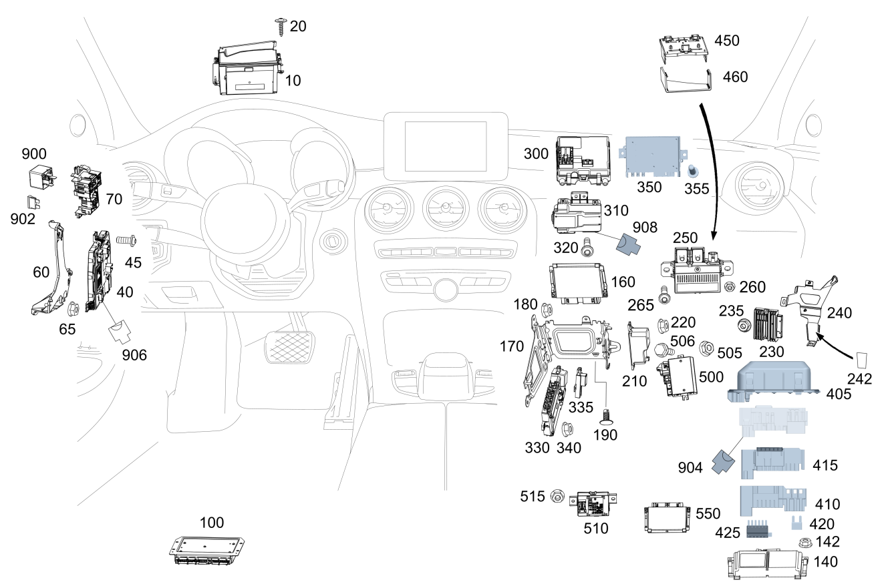

| № | Артикул | Название | Кол. | Примечание | Ограничение |
|---|---|---|---|---|---|
| 10 | A 205 900 66 13 | Блок управления (CONTROL UNIT) | 1 | Проекционный дисплей Рулевое управление: Влево [672] ДЕТАЛЬ ПОСЛЕ УСТАН.ПРОВЕРИТЬ НА АКТУАЛЬНОСТЬ "ПРОШИВНОГО" ПО | 463 |
| 10 | A 205 900 01 15 | Блок управления (CONTROL UNIT) | 1 | Проекционный дисплей Рулевое управление: Влево [672] ДЕТАЛЬ ПОСЛЕ УСТАН.ПРОВЕРИТЬ НА АКТУАЛЬНОСТЬ "ПРОШИВНОГО" ПО | 463 |
| 10 | A 205 900 61 16 | Блок управления (CONTROL UNIT) | 1 | Проекционный дисплей Рулевое управление: Влево [672] ДЕТАЛЬ ПОСЛЕ УСТАН.ПРОВЕРИТЬ НА АКТУАЛЬНОСТЬ "ПРОШИВНОГО" ПО | 463 |
| 10 | A 205 900 84 28 | Блок управления (CONTROL UNIT) | 1 | Проекционный дисплей Рулевое управление: Влево [672] ДЕТАЛЬ ПОСЛЕ УСТАН.ПРОВЕРИТЬ НА АКТУАЛЬНОСТЬ "ПРОШИВНОГО" ПО [697] ДЕТАЛЬ ПОСТАВЛЯЕТСЯ ТОЛЬКО/ИЛИ ТАКЖЕ КАК ЗАП.ЧАСТЬ | 463 |
| 10 | A 205 900 07 17 | Блок управления (CONTROL UNIT) | 1 | Проекционный дисплей Рулевое управление: Влево [672] ДЕТАЛЬ ПОСЛЕ УСТАН.ПРОВЕРИТЬ НА АКТУАЛЬНОСТЬ "ПРОШИВНОГО" ПО | 463+809 |
| 10 | A 205 900 93 35 | Блок управления (CONTROL UNIT) | 1 | Проекционный дисплей Рулевое управление: Влево [672] ДЕТАЛЬ ПОСЛЕ УСТАН.ПРОВЕРИТЬ НА АКТУАЛЬНОСТЬ "ПРОШИВНОГО" ПО | 463+809 |
| 10 | A 205 900 07 17 | Блок управления (CONTROL UNIT) | 1 | Проекционный дисплей Рулевое управление: Влево [672] ДЕТАЛЬ ПОСЛЕ УСТАН.ПРОВЕРИТЬ НА АКТУАЛЬНОСТЬ "ПРОШИВНОГО" ПО | 463+809 |
| 10 | A 205 900 07 17 | Блок управления (CONTROL UNIT) | 1 | Проекционный дисплей Рулевое управление: Влево [672] ДЕТАЛЬ ПОСЛЕ УСТАН.ПРОВЕРИТЬ НА АКТУАЛЬНОСТЬ "ПРОШИВНОГО" ПО | 463 |
| 10 | A 205 900 89 43 | Блок управления (CONTROL UNIT) | 1 | Проекционный дисплей Рулевое управление: Влево [672] ДЕТАЛЬ ПОСЛЕ УСТАН.ПРОВЕРИТЬ НА АКТУАЛЬНОСТЬ "ПРОШИВНОГО" ПО [697] ДЕТАЛЬ ПОСТАВЛЯЕТСЯ ТОЛЬКО/ИЛИ ТАКЖЕ КАК ЗАП.ЧАСТЬ | (809+059/800)+463 |
| 10 | A 205 900 89 43 | Блок управления (CONTROL UNIT) | 1 | Проекционный дисплей Рулевое управление: Влево [672] ДЕТАЛЬ ПОСЛЕ УСТАН.ПРОВЕРИТЬ НА АКТУАЛЬНОСТЬ "ПРОШИВНОГО" ПО [697] ДЕТАЛЬ ПОСТАВЛЯЕТСЯ ТОЛЬКО/ИЛИ ТАКЖЕ КАК ЗАП.ЧАСТЬ | 463 |
| 10 | A 205 900 65 13 | Блок управления (CONTROL UNIT) | 1 | Проекционный дисплей Рулевое управление: Вправо [672] ДЕТАЛЬ ПОСЛЕ УСТАН.ПРОВЕРИТЬ НА АКТУАЛЬНОСТЬ "ПРОШИВНОГО" ПО | 463 |
| 10 | A 205 900 02 15 | Блок управления (CONTROL UNIT) | 1 | Проекционный дисплей Рулевое управление: Вправо [672] ДЕТАЛЬ ПОСЛЕ УСТАН.ПРОВЕРИТЬ НА АКТУАЛЬНОСТЬ "ПРОШИВНОГО" ПО | 463 |
| 10 | A 205 900 62 16 | Блок управления (CONTROL UNIT) | 1 | Проекционный дисплей Рулевое управление: Вправо [672] ДЕТАЛЬ ПОСЛЕ УСТАН.ПРОВЕРИТЬ НА АКТУАЛЬНОСТЬ "ПРОШИВНОГО" ПО | 463 |
| 10 | A 205 900 85 28 | Блок управления (CONTROL UNIT) | 1 | Проекционный дисплей Рулевое управление: Вправо [672] ДЕТАЛЬ ПОСЛЕ УСТАН.ПРОВЕРИТЬ НА АКТУАЛЬНОСТЬ "ПРОШИВНОГО" ПО [697] ДЕТАЛЬ ПОСТАВЛЯЕТСЯ ТОЛЬКО/ИЛИ ТАКЖЕ КАК ЗАП.ЧАСТЬ | 463 |
| 10 | A 205 900 85 28 | Блок управления (CONTROL UNIT) | 1 | Проекционный дисплей Рулевое управление: Вправо [672] ДЕТАЛЬ ПОСЛЕ УСТАН.ПРОВЕРИТЬ НА АКТУАЛЬНОСТЬ "ПРОШИВНОГО" ПО [697] ДЕТАЛЬ ПОСТАВЛЯЕТСЯ ТОЛЬКО/ИЛИ ТАКЖЕ КАК ЗАП.ЧАСТЬ | 463 |
| 10 | A 205 900 05 17 | Блок управления (CONTROL UNIT) | 1 | Проекционный дисплей Рулевое управление: Вправо [672] ДЕТАЛЬ ПОСЛЕ УСТАН.ПРОВЕРИТЬ НА АКТУАЛЬНОСТЬ "ПРОШИВНОГО" ПО [697] ДЕТАЛЬ ПОСТАВЛЯЕТСЯ ТОЛЬКО/ИЛИ ТАКЖЕ КАК ЗАП.ЧАСТЬ | 463+809 |
| 10 | A 205 900 94 35 | Блок управления (CONTROL UNIT) | 1 | Проекционный дисплей Рулевое управление: Вправо [672] ДЕТАЛЬ ПОСЛЕ УСТАН.ПРОВЕРИТЬ НА АКТУАЛЬНОСТЬ "ПРОШИВНОГО" ПО | 463+809 |
| 10 | A 205 900 05 17 | Блок управления (CONTROL UNIT) | 1 | Проекционный дисплей Рулевое управление: Вправо [672] ДЕТАЛЬ ПОСЛЕ УСТАН.ПРОВЕРИТЬ НА АКТУАЛЬНОСТЬ "ПРОШИВНОГО" ПО [697] ДЕТАЛЬ ПОСТАВЛЯЕТСЯ ТОЛЬКО/ИЛИ ТАКЖЕ КАК ЗАП.ЧАСТЬ | 463+809 |
| 10 | A 205 900 05 17 | Блок управления (CONTROL UNIT) | 1 | Проекционный дисплей Рулевое управление: Вправо [672] ДЕТАЛЬ ПОСЛЕ УСТАН.ПРОВЕРИТЬ НА АКТУАЛЬНОСТЬ "ПРОШИВНОГО" ПО [697] ДЕТАЛЬ ПОСТАВЛЯЕТСЯ ТОЛЬКО/ИЛИ ТАКЖЕ КАК ЗАП.ЧАСТЬ | 463 |
| 10 | A 205 900 90 43 | Блок управления (CONTROL UNIT) | 1 | Проекционный дисплей Рулевое управление: Вправо [672] ДЕТАЛЬ ПОСЛЕ УСТАН.ПРОВЕРИТЬ НА АКТУАЛЬНОСТЬ "ПРОШИВНОГО" ПО [697] ДЕТАЛЬ ПОСТАВЛЯЕТСЯ ТОЛЬКО/ИЛИ ТАКЖЕ КАК ЗАП.ЧАСТЬ | (809+059/800)+463 |
| 10 | A 205 900 90 43 | Блок управления (CONTROL UNIT) | 1 | Проекционный дисплей Рулевое управление: Вправо [672] ДЕТАЛЬ ПОСЛЕ УСТАН.ПРОВЕРИТЬ НА АКТУАЛЬНОСТЬ "ПРОШИВНОГО" ПО [697] ДЕТАЛЬ ПОСТАВЛЯЕТСЯ ТОЛЬКО/ИЛИ ТАКЖЕ КАК ЗАП.ЧАСТЬ | 463 |
| 20 | A 006 990 43 12 | Винт со полукругл.головой (PAN HEAD SCREW W COLLAR) | 3 | Крепление проекционного дисплея; 5X20 | 463 |
| 20 | A 000 990 70 06 | Винт со полукругл.головой (PAN HEAD SCREW W COLLAR) | 3 | Крепление проекционного дисплея; 5X20 | 463 |
| 40 | A 205 900 39 13 | Блок управления (CONTROL UNIT) | 1 | Модуль обработки сигналов и управления спереди SAM [672] ДЕТАЛЬ ПОСЛЕ УСТАН.ПРОВЕРИТЬ НА АКТУАЛЬНОСТЬ "ПРОШИВНОГО" ПО | |
| 40 | A 205 900 68 18 | Блок управления (CONTROL UNIT) | 1 | Модуль обработки сигналов и управления спереди SAM [672] ДЕТАЛЬ ПОСЛЕ УСТАН.ПРОВЕРИТЬ НА АКТУАЛЬНОСТЬ "ПРОШИВНОГО" ПО [697] ДЕТАЛЬ ПОСТАВЛЯЕТСЯ ТОЛЬКО/ИЛИ ТАКЖЕ КАК ЗАП.ЧАСТЬ | |
| 40 | A 205 900 81 04 | Блок управления (CONTROL UNIT) | 1 | Модуль обработки сигналов и управления спереди SAM [672] ДЕТАЛЬ ПОСЛЕ УСТАН.ПРОВЕРИТЬ НА АКТУАЛЬНОСТЬ "ПРОШИВНОГО" ПО [697] ДЕТАЛЬ ПОСТАВЛЯЕТСЯ ТОЛЬКО/ИЛИ ТАКЖЕ КАК ЗАП.ЧАСТЬ | 805+055+140/806/ME06 |
| 40 | A 205 900 69 21 | Блок управления (CONTROL UNIT) | 1 | Модуль обработки сигналов и управления спереди SAM [672] ДЕТАЛЬ ПОСЛЕ УСТАН.ПРОВЕРИТЬ НА АКТУАЛЬНОСТЬ "ПРОШИВНОГО" ПО [697] ДЕТАЛЬ ПОСТАВЛЯЕТСЯ ТОЛЬКО/ИЛИ ТАКЖЕ КАК ЗАП.ЧАСТЬ | 805+055+140/806 |
| 40 | A 205 900 69 21 | Блок управления (CONTROL UNIT) | 1 | Модуль обработки сигналов и управления спереди SAM [672] ДЕТАЛЬ ПОСЛЕ УСТАН.ПРОВЕРИТЬ НА АКТУАЛЬНОСТЬ "ПРОШИВНОГО" ПО [697] ДЕТАЛЬ ПОСТАВЛЯЕТСЯ ТОЛЬКО/ИЛИ ТАКЖЕ КАК ЗАП.ЧАСТЬ | |
| 40 | A 205 900 93 21 | Блок управления (CONTROL UNIT) | 1 | Модуль обработки сигналов и управления спереди SAM [672] ДЕТАЛЬ ПОСЛЕ УСТАН.ПРОВЕРИТЬ НА АКТУАЛЬНОСТЬ "ПРОШИВНОГО" ПО [697] ДЕТАЛЬ ПОСТАВЛЯЕТСЯ ТОЛЬКО/ИЛИ ТАКЖЕ КАК ЗАП.ЧАСТЬ | |
| 40 | A 205 900 68 22 | Блок управления (CONTROL UNIT) | 1 | Модуль обработки сигналов и управления спереди SAM [672] ДЕТАЛЬ ПОСЛЕ УСТАН.ПРОВЕРИТЬ НА АКТУАЛЬНОСТЬ "ПРОШИВНОГО" ПО [697] ДЕТАЛЬ ПОСТАВЛЯЕТСЯ ТОЛЬКО/ИЛИ ТАКЖЕ КАК ЗАП.ЧАСТЬ | |
| 40 | A 205 900 63 30 | Блок управления (CONTROL UNIT) | 1 | Модуль обработки сигналов и управления спереди SAM [672] ДЕТАЛЬ ПОСЛЕ УСТАН.ПРОВЕРИТЬ НА АКТУАЛЬНОСТЬ "ПРОШИВНОГО" ПО [697] ДЕТАЛЬ ПОСТАВЛЯЕТСЯ ТОЛЬКО/ИЛИ ТАКЖЕ КАК ЗАП.ЧАСТЬ | |
| 40 | A 205 900 75 39 | Блок управления (CONTROL UNIT) | 1 | Модуль обработки сигналов и управления спереди SAM [672] ДЕТАЛЬ ПОСЛЕ УСТАН.ПРОВЕРИТЬ НА АКТУАЛЬНОСТЬ "ПРОШИВНОГО" ПО | 809 |
| 40 | A 205 900 75 39 | Блок управления (CONTROL UNIT) | 1 | Модуль обработки сигналов и управления спереди SAM [672] ДЕТАЛЬ ПОСЛЕ УСТАН.ПРОВЕРИТЬ НА АКТУАЛЬНОСТЬ "ПРОШИВНОГО" ПО | |
| 40 | A 205 900 81 39 | Блок управления (CONTROL UNIT) | 1 | Модуль обработки сигналов и управления спереди SAM [672] ДЕТАЛЬ ПОСЛЕ УСТАН.ПРОВЕРИТЬ НА АКТУАЛЬНОСТЬ "ПРОШИВНОГО" ПО | |
| 40 | A 205 900 85 43 | Блок управления (CONTROL UNIT) | 1 | Модуль обработки сигналов и управления спереди SAM [672] ДЕТАЛЬ ПОСЛЕ УСТАН.ПРОВЕРИТЬ НА АКТУАЛЬНОСТЬ "ПРОШИВНОГО" ПО | 800 |
| 40 | A 205 900 71 47 | Блок управления (CONTROL UNIT) | 1 | Модуль обработки сигналов и управления спереди SAM [672] ДЕТАЛЬ ПОСЛЕ УСТАН.ПРОВЕРИТЬ НА АКТУАЛЬНОСТЬ "ПРОШИВНОГО" ПО | |
| 40 | A 205 900 78 45 | Блок управления (CONTROL UNIT) | 1 | Модуль обработки сигналов и управления спереди SAM [672] ДЕТАЛЬ ПОСЛЕ УСТАН.ПРОВЕРИТЬ НА АКТУАЛЬНОСТЬ "ПРОШИВНОГО" ПО [697] ДЕТАЛЬ ПОСТАВЛЯЕТСЯ ТОЛЬКО/ИЛИ ТАКЖЕ КАК ЗАП.ЧАСТЬ | 801 |
| 40 | A 205 900 78 45 | Блок управления (CONTROL UNIT) | 1 | Модуль обработки сигналов и управления спереди SAM [672] ДЕТАЛЬ ПОСЛЕ УСТАН.ПРОВЕРИТЬ НА АКТУАЛЬНОСТЬ "ПРОШИВНОГО" ПО [697] ДЕТАЛЬ ПОСТАВЛЯЕТСЯ ТОЛЬКО/ИЛИ ТАКЖЕ КАК ЗАП.ЧАСТЬ | |
| 45 | N 000000 002349 | Винт с 6-гр. глвк (HEXALOBULAR SCREW) | 1 | Блок управления к держателю; 6X16 | |
| 45 | N 000000 002349 | Винт с 6-гр. глвк (HEXALOBULAR SCREW) | 1 | Блок управления к держателю; 6X16 | |
| 45 | A 094 990 18 05 | FILLISTER HD SCREW (PAN HEAD SCREW) | 1 | Блок управления к держателю | |
| 60 | A 205 545 00 40 | Держатель (HOLDER) | 1 | Блок управления модуля SAM Рулевое управление: Влево | |
| 60 | A 205 545 15 40 | Держатель (HOLDER) | 1 | Блок управления модуля SAM Рулевое управление: Вправо | |
| 65 | N 000000 006037 | ГАЙКА КОМБИНИРОВАННАЯ (NUT-AND-WASHER ASSEMBLY) | 3 | Крепление держателя; M6 | |
| 70 | A 205 906 72 00 | Блок реле (RELAY UNIT) | 1 | В передней панели | |
| 70 | A 205 906 58 06 | Блок реле (RELAY UNIT) | 1 | В передней панели | |
| 100 | A 222 900 96 07 | Блок управления (CONTROL UNIT) | 1 | Пневмоподвеска [672] ДЕТАЛЬ ПОСЛЕ УСТАН.ПРОВЕРИТЬ НА АКТУАЛЬНОСТЬ "ПРОШИВНОГО" ПО | 489/488/492 |
| 100 | A 222 900 96 07 | Блок управления (CONTROL UNIT) | 1 | Пневмоподвеска [672] ДЕТАЛЬ ПОСЛЕ УСТАН.ПРОВЕРИТЬ НА АКТУАЛЬНОСТЬ "ПРОШИВНОГО" ПО | 489 |
| 100 | A 222 900 07 08 | Блок управления (CONTROL UNIT) | 1 | Пневмоподвеска [672] ДЕТАЛЬ ПОСЛЕ УСТАН.ПРОВЕРИТЬ НА АКТУАЛЬНОСТЬ "ПРОШИВНОГО" ПО | 488/492 |
| 100 | A 222 900 70 10 | Блок управления (CONTROL UNIT) | 1 | Пневмоподвеска [672] ДЕТАЛЬ ПОСЛЕ УСТАН.ПРОВЕРИТЬ НА АКТУАЛЬНОСТЬ "ПРОШИВНОГО" ПО [697] ДЕТАЛЬ ПОСТАВЛЯЕТСЯ ТОЛЬКО/ИЛИ ТАКЖЕ КАК ЗАП.ЧАСТЬ | 488/492 |
| 100 | A 222 900 98 11 | Блок управления (CONTROL UNIT) | 1 | Пневмоподвеска [672] ДЕТАЛЬ ПОСЛЕ УСТАН.ПРОВЕРИТЬ НА АКТУАЛЬНОСТЬ "ПРОШИВНОГО" ПО [697] ДЕТАЛЬ ПОСТАВЛЯЕТСЯ ТОЛЬКО/ИЛИ ТАКЖЕ КАК ЗАП.ЧАСТЬ | 807+(489/488/492) |
| 100 | A 222 900 07 08 | Блок управления (CONTROL UNIT) | 1 | Пневмоподвеска [672] ДЕТАЛЬ ПОСЛЕ УСТАН.ПРОВЕРИТЬ НА АКТУАЛЬНОСТЬ "ПРОШИВНОГО" ПО | (805+055+140/806)+(489/488/492) |
| 100 | A 222 900 06 12 | Блок управления (CONTROL UNIT) | 1 | Пневмоподвеска [672] ДЕТАЛЬ ПОСЛЕ УСТАН.ПРОВЕРИТЬ НА АКТУАЛЬНОСТЬ "ПРОШИВНОГО" ПО [697] ДЕТАЛЬ ПОСТАВЛЯЕТСЯ ТОЛЬКО/ИЛИ ТАКЖЕ КАК ЗАП.ЧАСТЬ | 489/488/492 |
| 100 | A 222 900 98 11 | Блок управления (CONTROL UNIT) | 1 | Пневмоподвеска [672] ДЕТАЛЬ ПОСЛЕ УСТАН.ПРОВЕРИТЬ НА АКТУАЛЬНОСТЬ "ПРОШИВНОГО" ПО [697] ДЕТАЛЬ ПОСТАВЛЯЕТСЯ ТОЛЬКО/ИЛИ ТАКЖЕ КАК ЗАП.ЧАСТЬ | 489/488/492 |
| 100 | A 222 900 62 13 | Блок управления (CONTROL UNIT) | 1 | Пневмоподвеска [672] ДЕТАЛЬ ПОСЛЕ УСТАН.ПРОВЕРИТЬ НА АКТУАЛЬНОСТЬ "ПРОШИВНОГО" ПО [697] ДЕТАЛЬ ПОСТАВЛЯЕТСЯ ТОЛЬКО/ИЛИ ТАКЖЕ КАК ЗАП.ЧАСТЬ | 488/489/492 |
| 100 | A 222 900 93 16 | Блок управления (CONTROL UNIT) | 1 | Пневмоподвеска [672] ДЕТАЛЬ ПОСЛЕ УСТАН.ПРОВЕРИТЬ НА АКТУАЛЬНОСТЬ "ПРОШИВНОГО" ПО | 809+(489/488/492) |
| 100 | A 222 900 20 19 | Блок управления (CONTROL UNIT) | 1 | Пневмоподвеска [672] ДЕТАЛЬ ПОСЛЕ УСТАН.ПРОВЕРИТЬ НА АКТУАЛЬНОСТЬ "ПРОШИВНОГО" ПО | 459 |
| 100 | A 222 900 32 20 | Блок управления (CONTROL UNIT) | 1 | Пневмоподвеска [672] ДЕТАЛЬ ПОСЛЕ УСТАН.ПРОВЕРИТЬ НА АКТУАЛЬНОСТЬ "ПРОШИВНОГО" ПО [697] ДЕТАЛЬ ПОСТАВЛЯЕТСЯ ТОЛЬКО/ИЛИ ТАКЖЕ КАК ЗАП.ЧАСТЬ | 459 |
| 100 | A 222 900 71 10 | Блок управления | 1 | Пневмоподвеска [672] ДЕТАЛЬ ПОСЛЕ УСТАН.ПРОВЕРИТЬ НА АКТУАЛЬНОСТЬ "ПРОШИВНОГО" ПО | 809+(489/488/492/459) |
| 100 | A 222 900 19 17 | Блок управления (CONTROL UNIT) | 1 | Пневмоподвеска [672] ДЕТАЛЬ ПОСЛЕ УСТАН.ПРОВЕРИТЬ НА АКТУАЛЬНОСТЬ "ПРОШИВНОГО" ПО | 809+(459) |
| 100 | A 222 900 19 17 | Блок управления (CONTROL UNIT) | 1 | Пневмоподвеска [672] ДЕТАЛЬ ПОСЛЕ УСТАН.ПРОВЕРИТЬ НА АКТУАЛЬНОСТЬ "ПРОШИВНОГО" ПО | 809+(459/(488/489)+(M177/M276+M016)) |
| 100 | A 222 900 62 13 | Блок управления (CONTROL UNIT) | 1 | Пневмоподвеска [672] ДЕТАЛЬ ПОСЛЕ УСТАН.ПРОВЕРИТЬ НА АКТУАЛЬНОСТЬ "ПРОШИВНОГО" ПО [697] ДЕТАЛЬ ПОСТАВЛЯЕТСЯ ТОЛЬКО/ИЛИ ТАКЖЕ КАК ЗАП.ЧАСТЬ | 808+(488/489/492) |
| 100 | A 222 900 93 16 | Блок управления (CONTROL UNIT) | 1 | Пневмоподвеска [672] ДЕТАЛЬ ПОСЛЕ УСТАН.ПРОВЕРИТЬ НА АКТУАЛЬНОСТЬ "ПРОШИВНОГО" ПО | 489/488/492 |
| 100 | A 222 900 21 19 | Блок управления (CONTROL UNIT) | 1 | Пневмоподвеска [672] ДЕТАЛЬ ПОСЛЕ УСТАН.ПРОВЕРИТЬ НА АКТУАЛЬНОСТЬ "ПРОШИВНОГО" ПО | 489/488/492 |
| 100 | A 222 900 21 19 | Блок управления (CONTROL UNIT) | 1 | Пневмоподвеска [672] ДЕТАЛЬ ПОСЛЕ УСТАН.ПРОВЕРИТЬ НА АКТУАЛЬНОСТЬ "ПРОШИВНОГО" ПО | 489/488 |
| 100 | A 222 900 49 21 | Блок управления (CONTROL UNIT) | 1 | Пневмоподвеска [672] ДЕТАЛЬ ПОСЛЕ УСТАН.ПРОВЕРИТЬ НА АКТУАЛЬНОСТЬ "ПРОШИВНОГО" ПО [697] ДЕТАЛЬ ПОСТАВЛЯЕТСЯ ТОЛЬКО/ИЛИ ТАКЖЕ КАК ЗАП.ЧАСТЬ | (489/488)+801 |
| 100 | A 222 900 49 21 | Блок управления (CONTROL UNIT) | 1 | Пневмоподвеска [672] ДЕТАЛЬ ПОСЛЕ УСТАН.ПРОВЕРИТЬ НА АКТУАЛЬНОСТЬ "ПРОШИВНОГО" ПО [697] ДЕТАЛЬ ПОСТАВЛЯЕТСЯ ТОЛЬКО/ИЛИ ТАКЖЕ КАК ЗАП.ЧАСТЬ | 489/488 |
| 140 | A 000 900 18 06 | Блок управления (CONTROL UNIT) | 1 | Радарные датчики [672] ДЕТАЛЬ ПОСЛЕ УСТАН.ПРОВЕРИТЬ НА АКТУАЛЬНОСТЬ "ПРОШИВНОГО" ПО [697] ДЕТАЛЬ ПОСТАВЛЯЕТСЯ ТОЛЬКО/ИЛИ ТАКЖЕ КАК ЗАП.ЧАСТЬ | 233 |
| 140 | A 000 900 01 06 | Блок управления (CONTROL UNIT) | 1 | Радарные датчики [672] ДЕТАЛЬ ПОСЛЕ УСТАН.ПРОВЕРИТЬ НА АКТУАЛЬНОСТЬ "ПРОШИВНОГО" ПО [697] ДЕТАЛЬ ПОСТАВЛЯЕТСЯ ТОЛЬКО/ИЛИ ТАКЖЕ КАК ЗАП.ЧАСТЬ | 233 |
| 140 | A 000 900 28 09 | Блок управления (CONTROL UNIT) | 1 | Радарные датчики [672] ДЕТАЛЬ ПОСЛЕ УСТАН.ПРОВЕРИТЬ НА АКТУАЛЬНОСТЬ "ПРОШИВНОГО" ПО | 233 |
| 140 | A 000 900 51 09 | Блок управления (CONTROL UNIT) | 1 | Радарные датчики [672] ДЕТАЛЬ ПОСЛЕ УСТАН.ПРОВЕРИТЬ НА АКТУАЛЬНОСТЬ "ПРОШИВНОГО" ПО [697] ДЕТАЛЬ ПОСТАВЛЯЕТСЯ ТОЛЬКО/ИЛИ ТАКЖЕ КАК ЗАП.ЧАСТЬ | 233 |
| 140 | A 213 900 57 27 | Блок управления (CONTROL UNIT) | 1 | Радарные датчики [672] ДЕТАЛЬ ПОСЛЕ УСТАН.ПРОВЕРИТЬ НА АКТУАЛЬНОСТЬ "ПРОШИВНОГО" ПО [697] ДЕТАЛЬ ПОСТАВЛЯЕТСЯ ТОЛЬКО/ИЛИ ТАКЖЕ КАК ЗАП.ЧАСТЬ | 233 |
| 140 | A 213 900 48 31 | Блок управления (CONTROL UNIT) | 1 | Радарные датчики [672] ДЕТАЛЬ ПОСЛЕ УСТАН.ПРОВЕРИТЬ НА АКТУАЛЬНОСТЬ "ПРОШИВНОГО" ПО [697] ДЕТАЛЬ ПОСТАВЛЯЕТСЯ ТОЛЬКО/ИЛИ ТАКЖЕ КАК ЗАП.ЧАСТЬ | 801+233 |
| 140 | A 213 900 48 31 | Блок управления (CONTROL UNIT) | 1 | Радарные датчики [672] ДЕТАЛЬ ПОСЛЕ УСТАН.ПРОВЕРИТЬ НА АКТУАЛЬНОСТЬ "ПРОШИВНОГО" ПО [697] ДЕТАЛЬ ПОСТАВЛЯЕТСЯ ТОЛЬКО/ИЛИ ТАКЖЕ КАК ЗАП.ЧАСТЬ | 233 |
| 140 | A 213 900 28 17 | Блок управления (CONTROL UNIT) | 1 | Радарные датчики [672] ДЕТАЛЬ ПОСЛЕ УСТАН.ПРОВЕРИТЬ НА АКТУАЛЬНОСТЬ "ПРОШИВНОГО" ПО [697] ДЕТАЛЬ ПОСТАВЛЯЕТСЯ ТОЛЬКО/ИЛИ ТАКЖЕ КАК ЗАП.ЧАСТЬ | 233 |
| 140 | A 213 900 17 26 | Блок управления (CONTROL UNIT) | 1 | Радарные датчики [672] ДЕТАЛЬ ПОСЛЕ УСТАН.ПРОВЕРИТЬ НА АКТУАЛЬНОСТЬ "ПРОШИВНОГО" ПО [697] ДЕТАЛЬ ПОСТАВЛЯЕТСЯ ТОЛЬКО/ИЛИ ТАКЖЕ КАК ЗАП.ЧАСТЬ | 233 |
| 140 | A 213 900 57 27 | Блок управления (CONTROL UNIT) | 1 | Радарные датчики [672] ДЕТАЛЬ ПОСЛЕ УСТАН.ПРОВЕРИТЬ НА АКТУАЛЬНОСТЬ "ПРОШИВНОГО" ПО [697] ДЕТАЛЬ ПОСТАВЛЯЕТСЯ ТОЛЬКО/ИЛИ ТАКЖЕ КАК ЗАП.ЧАСТЬ | 801+233 |
| 160 | A 205 900 77 05 | Блок управления (CONTROL UNIT) | 1 | Трансмиссия [672] ДЕТАЛЬ ПОСЛЕ УСТАН.ПРОВЕРИТЬ НА АКТУАЛЬНОСТЬ "ПРОШИВНОГО" ПО [697] ДЕТАЛЬ ПОСТАВЛЯЕТСЯ ТОЛЬКО/ИЛИ ТАКЖЕ КАК ЗАП.ЧАСТЬ | |
| 160 | A 213 900 24 01 | Блок управления (CONTROL UNIT) | 1 | Трансмиссия [672] ДЕТАЛЬ ПОСЛЕ УСТАН.ПРОВЕРИТЬ НА АКТУАЛЬНОСТЬ "ПРОШИВНОГО" ПО | 809 |
| 160 | A 213 900 17 22 | Блок управления (CONTROL UNIT) | 1 | Трансмиссия [672] ДЕТАЛЬ ПОСЛЕ УСТАН.ПРОВЕРИТЬ НА АКТУАЛЬНОСТЬ "ПРОШИВНОГО" ПО [697] ДЕТАЛЬ ПОСТАВЛЯЕТСЯ ТОЛЬКО/ИЛИ ТАКЖЕ КАК ЗАП.ЧАСТЬ | 809 |
| 160 | A 213 900 17 22 | Блок управления (CONTROL UNIT) | 1 | Трансмиссия [672] ДЕТАЛЬ ПОСЛЕ УСТАН.ПРОВЕРИТЬ НА АКТУАЛЬНОСТЬ "ПРОШИВНОГО" ПО [697] ДЕТАЛЬ ПОСТАВЛЯЕТСЯ ТОЛЬКО/ИЛИ ТАКЖЕ КАК ЗАП.ЧАСТЬ | -(M177/M276+M016) |
| 160 | A 213 900 59 01 | Блок управления (CONTROL UNIT) | 1 | Трансмиссия [672] ДЕТАЛЬ ПОСЛЕ УСТАН.ПРОВЕРИТЬ НА АКТУАЛЬНОСТЬ "ПРОШИВНОГО" ПО | (M177/M264+(B01/M20+M014+472)/U21/(M274/M654)+(ME05/ME06))+809 |
| 170 | A 205 545 13 40 | Держатель (HOLDER) | 1 | Для блока управления трансмиссии Рулевое управление: Влево | |
| 170 | A 205 545 17 40 | Держатель (HOLDER) | 1 | Для блока управления трансмиссии Рулевое управление: Вправо | |
| 170 | A 213 540 01 40 | Держатель (HOLDER) | 1 | Для блока управления трансмиссии Рулевое управление: Влево | 809+877 |
| 170 | A 213 540 01 40 | Держатель (HOLDER) | 1 | Для блока управления трансмиссии Рулевое управление: Влево | 877 |
| 170 | A 213 540 02 40 | Держатель (HOLDER) | 1 | Для блока управления трансмиссии Рулевое управление: Вправо | 809+877 |
| 170 | A 213 540 02 40 | Держатель (HOLDER) | 1 | Для блока управления трансмиссии Рулевое управление: Вправо | 877 |
| 180 | A 000 990 43 37 | Шестигранная гайка (HEXAGON NUT) | 3 | Держатель к остову кузова; M6 Рулевое управление: Влево | |
| 180 | N 000000 008290 | Шестигранная гайка (HEXAGON NUT) | 3 | Держатель к остову кузова; M6 Рулевое управление: Влево | |
| 180 | A 000 990 43 37 | Шестигранная гайка (HEXAGON NUT) | 2 | Держатель к остову кузова; M6 Рулевое управление: Вправо | |
| 180 | N 000000 008290 | Шестигранная гайка (HEXAGON NUT) | 2 | Держатель к остову кузова; M6 Рулевое управление: Вправо | |
| 190 | A 003 997 04 86 | Пробка (GROMMET) | 1 | К держателю Рулевое управление: Вправо | |
| 210 | A 205 440 00 73 | Преобразователь (VOLTAGE CONVERTER) | 1 | Преобразователь напряжения | 421/427 |
| 210 | A 205 905 28 09 | Преобразователь (VOLTAGE CONVERTER) | 1 | Преобразователь напряжения [414] СТАРУЮ ДЕТАЛЬ УСТАНАВЛИВАТЬ БОЛЬШЕ НЕ РАЗРЕШАЕТСЯ | 421/427 |
| 210 | A 205 905 34 14 | Преобразователь (VOLTAGE CONVERTER) | 1 | Преобразователь напряжения [697] ДЕТАЛЬ ПОСТАВЛЯЕТСЯ ТОЛЬКО/ИЛИ ТАКЖЕ КАК ЗАП.ЧАСТЬ | 421 |
| 220 | N 910112 005000 | Шестигранная гайка (HEXAGON NUT) | 1 | Крепление преобразователя напряжения; M5 | 421/427 |
| 220 | A 000 990 43 37 | Шестигранная гайка (HEXAGON NUT) | 1 | Крепление преобразователя напряжения; M6 | 421/427 |
| 220 | N 910112 005000 | Шестигранная гайка (HEXAGON NUT) | 1 | Крепление преобразователя напряжения; M5 | 421/427 |
| 220 | A 000 990 43 37 | Шестигранная гайка (HEXAGON NUT) | 1 | Крепление преобразователя напряжения; M6 | 421/427 |
| 220 | N 000000 008290 | Шестигранная гайка (HEXAGON NUT) | 1 | Крепление преобразователя напряжения; M6 | 421 |
| 230 | A 205 900 62 26 | Блок управления (CONTROL UNIT) | 1 | Акустический генератор [672] ДЕТАЛЬ ПОСЛЕ УСТАН.ПРОВЕРИТЬ НА АКТУАЛЬНОСТЬ "ПРОШИВНОГО" ПО | B63 |
| 230 | A 205 900 30 28 | Блок управления (CONTROL UNIT) | 1 | Акустический генератор [672] ДЕТАЛЬ ПОСЛЕ УСТАН.ПРОВЕРИТЬ НА АКТУАЛЬНОСТЬ "ПРОШИВНОГО" ПО | B63 |
| 230 | A 253 900 12 01 | Блок управления (CONTROL UNIT) | 1 | Акустический генератор [672] ДЕТАЛЬ ПОСЛЕ УСТАН.ПРОВЕРИТЬ НА АКТУАЛЬНОСТЬ "ПРОШИВНОГО" ПО [697] ДЕТАЛЬ ПОСТАВЛЯЕТСЯ ТОЛЬКО/ИЛИ ТАКЖЕ КАК ЗАП.ЧАСТЬ | B63 |
| 230 | A 238 900 89 00 | Блок управления (CONTROL UNIT) | 1 | Акустический генератор [672] ДЕТАЛЬ ПОСЛЕ УСТАН.ПРОВЕРИТЬ НА АКТУАЛЬНОСТЬ "ПРОШИВНОГО" ПО | B63 |
| 230 | A 238 900 09 01 | Блок управления (CONTROL UNIT) | 1 | Акустический генератор [672] ДЕТАЛЬ ПОСЛЕ УСТАН.ПРОВЕРИТЬ НА АКТУАЛЬНОСТЬ "ПРОШИВНОГО" ПО [697] ДЕТАЛЬ ПОСТАВЛЯЕТСЯ ТОЛЬКО/ИЛИ ТАКЖЕ КАК ЗАП.ЧАСТЬ | B63 |
| 235 | A 000 990 43 37 | Шестигранная гайка (HEXAGON NUT) | 2 | Крепление генератора звука; M6 | B63 |
| 235 | A 000 990 43 37 | Шестигранная гайка (HEXAGON NUT) | 2 | Крепление держателя; M6 Рулевое управление: Вправо | B63 |
| 240 | A 205 540 19 80 | Держатель блока упр. (CONTROL UNIT HOLDER) | 1 | Акустический генератор Рулевое управление: Влево | B63 |
| 240 | A 205 540 20 80 | Держатель блока упр. (CONTROL UNIT HOLDER) | 1 | Акустический генератор Рулевое управление: Вправо | B63 |
| 242 | A 123 758 04 97 | ПРОКЛАДКА (FELT STRIP) | 1 | К держателю; 40 X 25 X 2 MM Рулевое управление: Вправо | B63 |
| 300 | A 205 900 40 13 | Блок управления (CONTROL UNIT) | 1 | Климатическая система [672] ДЕТАЛЬ ПОСЛЕ УСТАН.ПРОВЕРИТЬ НА АКТУАЛЬНОСТЬ "ПРОШИВНОГО" ПО | |
| 300 | A 205 900 76 15 | Блок управления (CONTROL UNIT) | 1 | Климатическая система [672] ДЕТАЛЬ ПОСЛЕ УСТАН.ПРОВЕРИТЬ НА АКТУАЛЬНОСТЬ "ПРОШИВНОГО" ПО | |
| 300 | A 205 900 14 19 | Блок управления (CONTROL UNIT) | 1 | Климатическая система [672] ДЕТАЛЬ ПОСЛЕ УСТАН.ПРОВЕРИТЬ НА АКТУАЛЬНОСТЬ "ПРОШИВНОГО" ПО | |
| 300 | A 205 900 75 21 | Блок управления (CONTROL UNIT) | 1 | Климатическая система [672] ДЕТАЛЬ ПОСЛЕ УСТАН.ПРОВЕРИТЬ НА АКТУАЛЬНОСТЬ "ПРОШИВНОГО" ПО | |
| 300 | A 205 900 69 23 | Блок управления (CONTROL UNIT) | 1 | Климатическая система [672] ДЕТАЛЬ ПОСЛЕ УСТАН.ПРОВЕРИТЬ НА АКТУАЛЬНОСТЬ "ПРОШИВНОГО" ПО [697] ДЕТАЛЬ ПОСТАВЛЯЕТСЯ ТОЛЬКО/ИЛИ ТАКЖЕ КАК ЗАП.ЧАСТЬ | 807/808 |
| 300 | A 205 900 69 23 | Блок управления (CONTROL UNIT) | 1 | Климатическая система [672] ДЕТАЛЬ ПОСЛЕ УСТАН.ПРОВЕРИТЬ НА АКТУАЛЬНОСТЬ "ПРОШИВНОГО" ПО [697] ДЕТАЛЬ ПОСТАВЛЯЕТСЯ ТОЛЬКО/ИЛИ ТАКЖЕ КАК ЗАП.ЧАСТЬ | |
| 300 | A 205 900 92 30 | Блок управления (CONTROL UNIT) | 1 | Климатическая система [672] ДЕТАЛЬ ПОСЛЕ УСТАН.ПРОВЕРИТЬ НА АКТУАЛЬНОСТЬ "ПРОШИВНОГО" ПО | |
| 300 | A 205 900 12 40 | Блок управления (CONTROL UNIT) | 1 | Климатическая система [672] ДЕТАЛЬ ПОСЛЕ УСТАН.ПРОВЕРИТЬ НА АКТУАЛЬНОСТЬ "ПРОШИВНОГО" ПО | |
| 300 | A 000 900 30 13 | Блок управления (CONTROL UNIT) | 1 | Климатическая система [672] ДЕТАЛЬ ПОСЛЕ УСТАН.ПРОВЕРИТЬ НА АКТУАЛЬНОСТЬ "ПРОШИВНОГО" ПО [697] ДЕТАЛЬ ПОСТАВЛЯЕТСЯ ТОЛЬКО/ИЛИ ТАКЖЕ КАК ЗАП.ЧАСТЬ | 809/809+ME05 |
| 300 | A 000 900 31 13 | Блок управления (CONTROL UNIT) | 1 | Климатическая система [672] ДЕТАЛЬ ПОСЛЕ УСТАН.ПРОВЕРИТЬ НА АКТУАЛЬНОСТЬ "ПРОШИВНОГО" ПО | 809 |
| 300 | A 000 900 88 14 | Блок управления (CONTROL UNIT) | 1 | Климатическая система [672] ДЕТАЛЬ ПОСЛЕ УСТАН.ПРОВЕРИТЬ НА АКТУАЛЬНОСТЬ "ПРОШИВНОГО" ПО | 809 |
| 300 | A 000 900 91 14 | Блок управления (CONTROL UNIT) | 1 | Климатическая система [672] ДЕТАЛЬ ПОСЛЕ УСТАН.ПРОВЕРИТЬ НА АКТУАЛЬНОСТЬ "ПРОШИВНОГО" ПО | 809 |
| 300 | A 000 900 91 14 | Блок управления (CONTROL UNIT) | 1 | Климатическая система [672] ДЕТАЛЬ ПОСЛЕ УСТАН.ПРОВЕРИТЬ НА АКТУАЛЬНОСТЬ "ПРОШИВНОГО" ПО | |
| 300 | A 000 900 10 17 | Блок управления (CONTROL UNIT) | 1 | Климатическая система [672] ДЕТАЛЬ ПОСЛЕ УСТАН.ПРОВЕРИТЬ НА АКТУАЛЬНОСТЬ "ПРОШИВНОГО" ПО | |
| 300 | A 000 900 87 18 | Блок управления (CONTROL UNIT) | 1 | Климатическая система [672] ДЕТАЛЬ ПОСЛЕ УСТАН.ПРОВЕРИТЬ НА АКТУАЛЬНОСТЬ "ПРОШИВНОГО" ПО [697] ДЕТАЛЬ ПОСТАВЛЯЕТСЯ ТОЛЬКО/ИЛИ ТАКЖЕ КАК ЗАП.ЧАСТЬ | |
| 300 | A 000 900 19 28 | Блок управления (CONTROL UNIT) | 1 | Климатическая система [672] ДЕТАЛЬ ПОСЛЕ УСТАН.ПРОВЕРИТЬ НА АКТУАЛЬНОСТЬ "ПРОШИВНОГО" ПО [697] ДЕТАЛЬ ПОСТАВЛЯЕТСЯ ТОЛЬКО/ИЛИ ТАКЖЕ КАК ЗАП.ЧАСТЬ | |
| 300 | A 000 900 71 26 | Блок управления (CONTROL UNIT) | 1 | Климатическая система [672] ДЕТАЛЬ ПОСЛЕ УСТАН.ПРОВЕРИТЬ НА АКТУАЛЬНОСТЬ "ПРОШИВНОГО" ПО [697] ДЕТАЛЬ ПОСТАВЛЯЕТСЯ ТОЛЬКО/ИЛИ ТАКЖЕ КАК ЗАП.ЧАСТЬ | |
| 300 | A 000 900 16 45 | Блок управления | 1 | Климатическая система [672] ДЕТАЛЬ ПОСЛЕ УСТАН.ПРОВЕРИТЬ НА АКТУАЛЬНОСТЬ "ПРОШИВНОГО" ПО | |
| 300 | A 000 900 20 50 | Блок управления (CONTROL UNIT) | 1 | Климатическая система [672] ДЕТАЛЬ ПОСЛЕ УСТАН.ПРОВЕРИТЬ НА АКТУАЛЬНОСТЬ "ПРОШИВНОГО" ПО | |
| 310 | A 000 540 82 50 | Закр. блок предохр. (FUSE BOX) | 1 | Пиропредохранитель F63 | (ME05/B01)+809 |
| 310 | A 000 540 82 50 | Закр. блок предохр. (FUSE BOX) | 1 | Пиропредохранитель F63 | (ME05/B01) |
| 310 | A 000 540 77 12 | Закр. блок предохр. (FUSE BOX) | 1 | Пиропредохранитель F63; \+REPAIR WIRING KIT A0045400305 | ME05/B01 |
| 310 | A 000 540 47 16 | Закр. блок предохр. (FUSE BOX) | 1 | Пиропредохранитель F63 | ME05/B01 |
| 320 | A 001 984 58 29 | Болт с головкой торкс (HEXALOBULAR BOLT) | 2 | Крепление закрытого блока предохранителей; 4X16 | (ME05/B01)+809 |
| 320 | A 001 984 58 29 | Болт с головкой торкс (HEXALOBULAR BOLT) | 2 | Крепление закрытого блока предохранителей; 4X16 | (ME05/B01) |
| 330 | A 205 540 28 50 | Закр. блок предохр. (FUSE BOX) | 1 | Салон | |
| 330 | A 213 540 61 00 | Закр. блок предохр. (FUSE BOX) | 1 | Салон | 809 |
| 330 | A 213 540 61 00 | Закр. блок предохр. (FUSE BOX) | 1 | Салон | |
| 335 | A 003 542 18 19 | - Реле (RELAY) | 1 | Выключатель тока покоя | 805/806/087/808 |
| 340 | N 000000 006037 | ГАЙКА КОМБИНИРОВАННАЯ (NUT-AND-WASHER ASSEMBLY) | 1 | Крепление закрытого блока предохранителей; M6 | |
| 340 | A 000 990 43 37 | Шестигранная гайка (HEXAGON NUT) | 1 | Крепление закрытого блока предохранителей; M6 | |
| 340 | A 000 990 43 37 | Шестигранная гайка (HEXAGON NUT) | 1 | Крепление закрытого блока предохранителей; M6 | |
| 350 | A 222 900 00 21 | Блок управления (CONTROL UNIT) | 1 | Система экстренного вызова [672] ДЕТАЛЬ ПОСЛЕ УСТАН.ПРОВЕРИТЬ НА АКТУАЛЬНОСТЬ "ПРОШИВНОГО" ПО | 362+830 |
| 350 | A 222 900 64 21 | Блок управления (CONTROL UNIT) | 1 | Система экстренного вызова [672] ДЕТАЛЬ ПОСЛЕ УСТАН.ПРОВЕРИТЬ НА АКТУАЛЬНОСТЬ "ПРОШИВНОГО" ПО [697] ДЕТАЛЬ ПОСТАВЛЯЕТСЯ ТОЛЬКО/ИЛИ ТАКЖЕ КАК ЗАП.ЧАСТЬ | 362+830 |
| 350 | A 222 900 01 21 | Блок управления (CONTROL UNIT) | 1 | Система экстренного вызова [672] ДЕТАЛЬ ПОСЛЕ УСТАН.ПРОВЕРИТЬ НА АКТУАЛЬНОСТЬ "ПРОШИВНОГО" ПО [697] ДЕТАЛЬ ПОСТАВЛЯЕТСЯ ТОЛЬКО/ИЛИ ТАКЖЕ КАК ЗАП.ЧАСТЬ | 362+(460/494) |
| 350 | A 222 900 65 21 | Блок управления (CONTROL UNIT) | 1 | Система экстренного вызова [672] ДЕТАЛЬ ПОСЛЕ УСТАН.ПРОВЕРИТЬ НА АКТУАЛЬНОСТЬ "ПРОШИВНОГО" ПО [697] ДЕТАЛЬ ПОСТАВЛЯЕТСЯ ТОЛЬКО/ИЛИ ТАКЖЕ КАК ЗАП.ЧАСТЬ | 362+(460/494) |
| 350 | A 222 900 90 21 | Блок управления (CONTROL UNIT) | 1 | Система экстренного вызова [672] ДЕТАЛЬ ПОСЛЕ УСТАН.ПРОВЕРИТЬ НА АКТУАЛЬНОСТЬ "ПРОШИВНОГО" ПО [697] ДЕТАЛЬ ПОСТАВЛЯЕТСЯ ТОЛЬКО/ИЛИ ТАКЖЕ КАК ЗАП.ЧАСТЬ | 362+(460/494) |
| 350 | A 222 900 02 21 | Блок управления (CONTROL UNIT) | 1 | Система экстренного вызова [672] ДЕТАЛЬ ПОСЛЕ УСТАН.ПРОВЕРИТЬ НА АКТУАЛЬНОСТЬ "ПРОШИВНОГО" ПО [697] ДЕТАЛЬ ПОСТАВЛЯЕТСЯ ТОЛЬКО/ИЛИ ТАКЖЕ КАК ЗАП.ЧАСТЬ | 362+498 |
| 350 | A 222 900 66 21 | Блок управления (CONTROL UNIT) | 1 | Система экстренного вызова [672] ДЕТАЛЬ ПОСЛЕ УСТАН.ПРОВЕРИТЬ НА АКТУАЛЬНОСТЬ "ПРОШИВНОГО" ПО [697] ДЕТАЛЬ ПОСТАВЛЯЕТСЯ ТОЛЬКО/ИЛИ ТАКЖЕ КАК ЗАП.ЧАСТЬ | 362+498 |
| 350 | A 222 900 75 21 | Блок управления (CONTROL UNIT) | 1 | Система экстренного вызова [672] ДЕТАЛЬ ПОСЛЕ УСТАН.ПРОВЕРИТЬ НА АКТУАЛЬНОСТЬ "ПРОШИВНОГО" ПО [697] ДЕТАЛЬ ПОСТАВЛЯЕТСЯ ТОЛЬКО/ИЛИ ТАКЖЕ КАК ЗАП.ЧАСТЬ | 362+2B0 |
| 350 | A 222 900 03 21 | Блок управления (CONTROL UNIT) | 1 | Система экстренного вызова [672] ДЕТАЛЬ ПОСЛЕ УСТАН.ПРОВЕРИТЬ НА АКТУАЛЬНОСТЬ "ПРОШИВНОГО" ПО [697] ДЕТАЛЬ ПОСТАВЛЯЕТСЯ ТОЛЬКО/ИЛИ ТАКЖЕ КАК ЗАП.ЧАСТЬ | 362+835 |
| 350 | A 222 900 76 21 | Блок управления (CONTROL UNIT) | 1 | Система экстренного вызова [672] ДЕТАЛЬ ПОСЛЕ УСТАН.ПРОВЕРИТЬ НА АКТУАЛЬНОСТЬ "ПРОШИВНОГО" ПО | 362+2B1 |
| 350 | A 222 900 05 21 | Блок управления (CONTROL UNIT) | 1 | Система экстренного вызова [672] ДЕТАЛЬ ПОСЛЕ УСТАН.ПРОВЕРИТЬ НА АКТУАЛЬНОСТЬ "ПРОШИВНОГО" ПО | 362+1B7 |
| 350 | A 222 900 68 21 | Блок управления (CONTROL UNIT) | 1 | Система экстренного вызова [672] ДЕТАЛЬ ПОСЛЕ УСТАН.ПРОВЕРИТЬ НА АКТУАЛЬНОСТЬ "ПРОШИВНОГО" ПО [697] ДЕТАЛЬ ПОСТАВЛЯЕТСЯ ТОЛЬКО/ИЛИ ТАКЖЕ КАК ЗАП.ЧАСТЬ | 362+1B7 |
| 350 | A 222 900 77 21 | Блок управления (CONTROL UNIT) | 1 | Система экстренного вызова [672] ДЕТАЛЬ ПОСЛЕ УСТАН.ПРОВЕРИТЬ НА АКТУАЛЬНОСТЬ "ПРОШИВНОГО" ПО [697] ДЕТАЛЬ ПОСТАВЛЯЕТСЯ ТОЛЬКО/ИЛИ ТАКЖЕ КАК ЗАП.ЧАСТЬ | 362+1B7 |
| 350 | A 222 900 04 21 | Блок управления (CONTROL UNIT) | 1 | Система экстренного вызова [672] ДЕТАЛЬ ПОСЛЕ УСТАН.ПРОВЕРИТЬ НА АКТУАЛЬНОСТЬ "ПРОШИВНОГО" ПО [697] ДЕТАЛЬ ПОСТАВЛЯЕТСЯ ТОЛЬКО/ИЛИ ТАКЖЕ КАК ЗАП.ЧАСТЬ | 362+1B2 |
| 350 | A 222 900 69 21 | Блок управления (CONTROL UNIT) | 1 | Система экстренного вызова [672] ДЕТАЛЬ ПОСЛЕ УСТАН.ПРОВЕРИТЬ НА АКТУАЛЬНОСТЬ "ПРОШИВНОГО" ПО [697] ДЕТАЛЬ ПОСТАВЛЯЕТСЯ ТОЛЬКО/ИЛИ ТАКЖЕ КАК ЗАП.ЧАСТЬ | 362+1B2 |
| 350 | A 222 900 78 21 | Блок управления (CONTROL UNIT) | 1 | Система экстренного вызова [672] ДЕТАЛЬ ПОСЛЕ УСТАН.ПРОВЕРИТЬ НА АКТУАЛЬНОСТЬ "ПРОШИВНОГО" ПО | 362+1B2 |
| 350 | A 213 900 22 10 | Блок управления (CONTROL UNIT) | 1 | Система экстренного вызова [672] ДЕТАЛЬ ПОСЛЕ УСТАН.ПРОВЕРИТЬ НА АКТУАЛЬНОСТЬ "ПРОШИВНОГО" ПО | 360 |
| 350 | A 213 900 80 13 | Блок управления (CONTROL UNIT) | 1 | Система экстренного вызова [672] ДЕТАЛЬ ПОСЛЕ УСТАН.ПРОВЕРИТЬ НА АКТУАЛЬНОСТЬ "ПРОШИВНОГО" ПО | 360 |
| 350 | A 213 900 36 17 | Блок управления (CONTROL UNIT) | 1 | Система экстренного вызова [672] ДЕТАЛЬ ПОСЛЕ УСТАН.ПРОВЕРИТЬ НА АКТУАЛЬНОСТЬ "ПРОШИВНОГО" ПО | 360 |
| 350 | A 213 900 83 13 | Блок управления (CONTROL UNIT) | 1 | Система экстренного вызова [672] ДЕТАЛЬ ПОСЛЕ УСТАН.ПРОВЕРИТЬ НА АКТУАЛЬНОСТЬ "ПРОШИВНОГО" ПО | 362+494 |
| 350 | A 213 900 46 15 | Блок управления (CONTROL UNIT) | 1 | Система экстренного вызова [672] ДЕТАЛЬ ПОСЛЕ УСТАН.ПРОВЕРИТЬ НА АКТУАЛЬНОСТЬ "ПРОШИВНОГО" ПО | 362+830 |
| 350 | A 213 900 38 17 | Блок управления (CONTROL UNIT) | 1 | Система экстренного вызова [672] ДЕТАЛЬ ПОСЛЕ УСТАН.ПРОВЕРИТЬ НА АКТУАЛЬНОСТЬ "ПРОШИВНОГО" ПО | 362+830 |
| 350 | A 213 900 36 17 | Блок управления (CONTROL UNIT) | 1 | Система экстренного вызова [672] ДЕТАЛЬ ПОСЛЕ УСТАН.ПРОВЕРИТЬ НА АКТУАЛЬНОСТЬ "ПРОШИВНОГО" ПО | 360+808 |
| 350 | A 213 900 36 17 | Блок управления (CONTROL UNIT) | 1 | Система экстренного вызова [672] ДЕТАЛЬ ПОСЛЕ УСТАН.ПРОВЕРИТЬ НА АКТУАЛЬНОСТЬ "ПРОШИВНОГО" ПО | 360 |
| 350 | A 213 900 38 17 | Блок управления (CONTROL UNIT) | 1 | Система экстренного вызова [672] ДЕТАЛЬ ПОСЛЕ УСТАН.ПРОВЕРИТЬ НА АКТУАЛЬНОСТЬ "ПРОШИВНОГО" ПО | 362+830+808 |
| 350 | A 213 900 38 17 | Блок управления (CONTROL UNIT) | 1 | Система экстренного вызова [672] ДЕТАЛЬ ПОСЛЕ УСТАН.ПРОВЕРИТЬ НА АКТУАЛЬНОСТЬ "ПРОШИВНОГО" ПО | 362+830 |
| 350 | A 213 900 22 20 | Блок управления (CONTROL UNIT) | 1 | Система экстренного вызова [672] ДЕТАЛЬ ПОСЛЕ УСТАН.ПРОВЕРИТЬ НА АКТУАЛЬНОСТЬ "ПРОШИВНОГО" ПО | 362+498+808 |
| 350 | A 213 900 22 20 | Блок управления (CONTROL UNIT) | 1 | Система экстренного вызова [672] ДЕТАЛЬ ПОСЛЕ УСТАН.ПРОВЕРИТЬ НА АКТУАЛЬНОСТЬ "ПРОШИВНОГО" ПО | 362+498 |
| 350 | A 222 900 57 15 | Блок управления (CONTROL UNIT) | 1 | Система экстренного вызова [672] ДЕТАЛЬ ПОСЛЕ УСТАН.ПРОВЕРИТЬ НА АКТУАЛЬНОСТЬ "ПРОШИВНОГО" ПО | 362+498 |
| 350 | A 213 900 98 18 | Блок управления | 1 | Система экстренного вызова [672] ДЕТАЛЬ ПОСЛЕ УСТАН.ПРОВЕРИТЬ НА АКТУАЛЬНОСТЬ "ПРОШИВНОГО" ПО | 362+835+808 |
| 350 | A 213 900 23 20 | Блок управления (CONTROL UNIT) | 1 | Система экстренного вызова [672] ДЕТАЛЬ ПОСЛЕ УСТАН.ПРОВЕРИТЬ НА АКТУАЛЬНОСТЬ "ПРОШИВНОГО" ПО | 362+835+808 |
| 350 | A 213 900 23 20 | Блок управления (CONTROL UNIT) | 1 | Система экстренного вызова [672] ДЕТАЛЬ ПОСЛЕ УСТАН.ПРОВЕРИТЬ НА АКТУАЛЬНОСТЬ "ПРОШИВНОГО" ПО | 362+835 |
| 350 | A 222 900 58 15 | Блок управления (CONTROL UNIT) | 1 | Система экстренного вызова [672] ДЕТАЛЬ ПОСЛЕ УСТАН.ПРОВЕРИТЬ НА АКТУАЛЬНОСТЬ "ПРОШИВНОГО" ПО | 362+835 |
| 350 | A 222 900 54 15 | Блок управления (CONTROL UNIT) | 1 | Система экстренного вызова [672] ДЕТАЛЬ ПОСЛЕ УСТАН.ПРОВЕРИТЬ НА АКТУАЛЬНОСТЬ "ПРОШИВНОГО" ПО [697] ДЕТАЛЬ ПОСТАВЛЯЕТСЯ ТОЛЬКО/ИЛИ ТАКЖЕ КАК ЗАП.ЧАСТЬ | 360+(531/506)+141 |
| 350 | A 222 900 54 15 | Блок управления (CONTROL UNIT) | 1 | Система экстренного вызова [672] ДЕТАЛЬ ПОСЛЕ УСТАН.ПРОВЕРИТЬ НА АКТУАЛЬНОСТЬ "ПРОШИВНОГО" ПО [697] ДЕТАЛЬ ПОСТАВЛЯЕТСЯ ТОЛЬКО/ИЛИ ТАКЖЕ КАК ЗАП.ЧАСТЬ | 360+(531/506) |
| 350 | A 222 900 53 15 | Блок управления (CONTROL UNIT) | 1 | Система экстренного вызова [672] ДЕТАЛЬ ПОСЛЕ УСТАН.ПРОВЕРИТЬ НА АКТУАЛЬНОСТЬ "ПРОШИВНОГО" ПО [697] ДЕТАЛЬ ПОСТАВЛЯЕТСЯ ТОЛЬКО/ИЛИ ТАКЖЕ КАК ЗАП.ЧАСТЬ | 360+(520/522)+141 |
| 350 | A 222 900 53 15 | Блок управления (CONTROL UNIT) | 1 | Система экстренного вызова [672] ДЕТАЛЬ ПОСЛЕ УСТАН.ПРОВЕРИТЬ НА АКТУАЛЬНОСТЬ "ПРОШИВНОГО" ПО [697] ДЕТАЛЬ ПОСТАВЛЯЕТСЯ ТОЛЬКО/ИЛИ ТАКЖЕ КАК ЗАП.ЧАСТЬ | 360+(520/522) |
| 350 | A 222 900 52 15 | Блок управления (CONTROL UNIT) | 1 | Система экстренного вызова [672] ДЕТАЛЬ ПОСЛЕ УСТАН.ПРОВЕРИТЬ НА АКТУАЛЬНОСТЬ "ПРОШИВНОГО" ПО [697] ДЕТАЛЬ ПОСТАВЛЯЕТСЯ ТОЛЬКО/ИЛИ ТАКЖЕ КАК ЗАП.ЧАСТЬ | 362+830+141 |
| 350 | A 222 900 52 15 | Блок управления (CONTROL UNIT) | 1 | Система экстренного вызова [672] ДЕТАЛЬ ПОСЛЕ УСТАН.ПРОВЕРИТЬ НА АКТУАЛЬНОСТЬ "ПРОШИВНОГО" ПО [697] ДЕТАЛЬ ПОСТАВЛЯЕТСЯ ТОЛЬКО/ИЛИ ТАКЖЕ КАК ЗАП.ЧАСТЬ | 362+830 |
| 350 | A 222 900 57 15 | Блок управления (CONTROL UNIT) | 1 | Система экстренного вызова [672] ДЕТАЛЬ ПОСЛЕ УСТАН.ПРОВЕРИТЬ НА АКТУАЛЬНОСТЬ "ПРОШИВНОГО" ПО | 362+498+141 |
| 350 | A 222 900 57 15 | Блок управления (CONTROL UNIT) | 1 | Система экстренного вызова [672] ДЕТАЛЬ ПОСЛЕ УСТАН.ПРОВЕРИТЬ НА АКТУАЛЬНОСТЬ "ПРОШИВНОГО" ПО | 362+498 |
| 350 | A 222 900 58 15 | Блок управления (CONTROL UNIT) | 1 | Система экстренного вызова [672] ДЕТАЛЬ ПОСЛЕ УСТАН.ПРОВЕРИТЬ НА АКТУАЛЬНОСТЬ "ПРОШИВНОГО" ПО | 362+835+141 |
| 350 | A 222 900 58 15 | Блок управления (CONTROL UNIT) | 1 | Система экстренного вызова [672] ДЕТАЛЬ ПОСЛЕ УСТАН.ПРОВЕРИТЬ НА АКТУАЛЬНОСТЬ "ПРОШИВНОГО" ПО | 362+835 |
| 350 | A 222 900 69 14 | Блок управления (CONTROL UNIT) | 1 | Система экстренного вызова [672] ДЕТАЛЬ ПОСЛЕ УСТАН.ПРОВЕРИТЬ НА АКТУАЛЬНОСТЬ "ПРОШИВНОГО" ПО | 362+(460/494)+(809/800) |
| 350 | A 222 900 48 19 | Блок управления (CONTROL UNIT) | 1 | Система экстренного вызова [672] ДЕТАЛЬ ПОСЛЕ УСТАН.ПРОВЕРИТЬ НА АКТУАЛЬНОСТЬ "ПРОШИВНОГО" ПО | 362+(460/494)+(809/800) |
| 350 | A 222 900 48 19 | Блок управления (CONTROL UNIT) | 1 | Система экстренного вызова [672] ДЕТАЛЬ ПОСЛЕ УСТАН.ПРОВЕРИТЬ НА АКТУАЛЬНОСТЬ "ПРОШИВНОГО" ПО | 362+(460/494) |
| 350 | A 222 900 45 20 | Блок управления (CONTROL UNIT) | 1 | Система экстренного вызова [672] ДЕТАЛЬ ПОСЛЕ УСТАН.ПРОВЕРИТЬ НА АКТУАЛЬНОСТЬ "ПРОШИВНОГО" ПО | 362+(460/494) |
| 350 | A 222 900 69 14 | Блок управления (CONTROL UNIT) | 1 | Система экстренного вызова [672] ДЕТАЛЬ ПОСЛЕ УСТАН.ПРОВЕРИТЬ НА АКТУАЛЬНОСТЬ "ПРОШИВНОГО" ПО | 362+460+(809/800) |
| 350 | A 222 900 92 17 | Блок управления (CONTROL UNIT) | 1 | Система экстренного вызова [672] ДЕТАЛЬ ПОСЛЕ УСТАН.ПРОВЕРИТЬ НА АКТУАЛЬНОСТЬ "ПРОШИВНОГО" ПО | 362+1B1+(809/800) |
| 350 | A 222 900 16 20 | Блок управления (CONTROL UNIT) | 1 | Система экстренного вызова [672] ДЕТАЛЬ ПОСЛЕ УСТАН.ПРОВЕРИТЬ НА АКТУАЛЬНОСТЬ "ПРОШИВНОГО" ПО [697] ДЕТАЛЬ ПОСТАВЛЯЕТСЯ ТОЛЬКО/ИЛИ ТАКЖЕ КАК ЗАП.ЧАСТЬ | 362+1B1+(809/800) |
| 350 | A 222 900 16 20 | Блок управления (CONTROL UNIT) | 1 | Система экстренного вызова [672] ДЕТАЛЬ ПОСЛЕ УСТАН.ПРОВЕРИТЬ НА АКТУАЛЬНОСТЬ "ПРОШИВНОГО" ПО [697] ДЕТАЛЬ ПОСТАВЛЯЕТСЯ ТОЛЬКО/ИЛИ ТАКЖЕ КАК ЗАП.ЧАСТЬ | 362+1B1 |
| 350 | A 222 900 52 15 | Блок управления (CONTROL UNIT) | 1 | Система экстренного вызова [672] ДЕТАЛЬ ПОСЛЕ УСТАН.ПРОВЕРИТЬ НА АКТУАЛЬНОСТЬ "ПРОШИВНОГО" ПО [697] ДЕТАЛЬ ПОСТАВЛЯЕТСЯ ТОЛЬКО/ИЛИ ТАКЖЕ КАК ЗАП.ЧАСТЬ | 362+830+(809/800) |
| 350 | A 222 900 47 19 | Блок управления (CONTROL UNIT) | 1 | Система экстренного вызова [672] ДЕТАЛЬ ПОСЛЕ УСТАН.ПРОВЕРИТЬ НА АКТУАЛЬНОСТЬ "ПРОШИВНОГО" ПО | 362+830+(809/800) |
| 350 | A 222 900 47 19 | Блок управления (CONTROL UNIT) | 1 | Система экстренного вызова [672] ДЕТАЛЬ ПОСЛЕ УСТАН.ПРОВЕРИТЬ НА АКТУАЛЬНОСТЬ "ПРОШИВНОГО" ПО | 362+830 |
| 350 | A 222 900 44 20 | Блок управления (CONTROL UNIT) | 1 | Система экстренного вызова [672] ДЕТАЛЬ ПОСЛЕ УСТАН.ПРОВЕРИТЬ НА АКТУАЛЬНОСТЬ "ПРОШИВНОГО" ПО | 362+830 |
| 350 | A 222 900 57 15 | Блок управления (CONTROL UNIT) | 1 | Система экстренного вызова [672] ДЕТАЛЬ ПОСЛЕ УСТАН.ПРОВЕРИТЬ НА АКТУАЛЬНОСТЬ "ПРОШИВНОГО" ПО | 362+498+(809/800) |
| 350 | A 222 900 50 19 | Блок управления (CONTROL UNIT) | 1 | Система экстренного вызова [672] ДЕТАЛЬ ПОСЛЕ УСТАН.ПРОВЕРИТЬ НА АКТУАЛЬНОСТЬ "ПРОШИВНОГО" ПО | 362+498+(809/800) |
| 350 | A 222 900 50 19 | Блок управления (CONTROL UNIT) | 1 | Система экстренного вызова [672] ДЕТАЛЬ ПОСЛЕ УСТАН.ПРОВЕРИТЬ НА АКТУАЛЬНОСТЬ "ПРОШИВНОГО" ПО | 362+498 |
| 350 | A 222 900 38 20 | Блок управления (CONTROL UNIT) | 1 | Система экстренного вызова [672] ДЕТАЛЬ ПОСЛЕ УСТАН.ПРОВЕРИТЬ НА АКТУАЛЬНОСТЬ "ПРОШИВНОГО" ПО | 362+498 |
| 350 | A 222 900 58 15 | Блок управления (CONTROL UNIT) | 1 | Система экстренного вызова [672] ДЕТАЛЬ ПОСЛЕ УСТАН.ПРОВЕРИТЬ НА АКТУАЛЬНОСТЬ "ПРОШИВНОГО" ПО | 362+835+(809/800) |
| 350 | A 222 900 51 19 | Блок управления (CONTROL UNIT) | 1 | Система экстренного вызова [672] ДЕТАЛЬ ПОСЛЕ УСТАН.ПРОВЕРИТЬ НА АКТУАЛЬНОСТЬ "ПРОШИВНОГО" ПО | 362+835+(809/800) |
| 350 | A 222 900 51 19 | Блок управления (CONTROL UNIT) | 1 | Система экстренного вызова [672] ДЕТАЛЬ ПОСЛЕ УСТАН.ПРОВЕРИТЬ НА АКТУАЛЬНОСТЬ "ПРОШИВНОГО" ПО | 362+835 |
| 350 | A 222 900 39 20 | Блок управления (CONTROL UNIT) | 1 | Система экстренного вызова [672] ДЕТАЛЬ ПОСЛЕ УСТАН.ПРОВЕРИТЬ НА АКТУАЛЬНОСТЬ "ПРОШИВНОГО" ПО | 362+835 |
| 350 | A 222 900 08 18 | Блок управления (CONTROL UNIT) | 1 | Система экстренного вызова [672] ДЕТАЛЬ ПОСЛЕ УСТАН.ПРОВЕРИТЬ НА АКТУАЛЬНОСТЬ "ПРОШИВНОГО" ПО | 362+1B2+809+059 |
| 350 | A 222 900 08 18 | Блок управления (CONTROL UNIT) | 1 | Система экстренного вызова [672] ДЕТАЛЬ ПОСЛЕ УСТАН.ПРОВЕРИТЬ НА АКТУАЛЬНОСТЬ "ПРОШИВНОГО" ПО | 362+1B2 |
| 350 | A 222 900 13 19 | Блок управления (CONTROL UNIT) | 1 | Система экстренного вызова [672] ДЕТАЛЬ ПОСЛЕ УСТАН.ПРОВЕРИТЬ НА АКТУАЛЬНОСТЬ "ПРОШИВНОГО" ПО | 362+1B7+809+059 |
| 350 | A 222 900 13 19 | Блок управления (CONTROL UNIT) | 1 | Система экстренного вызова [672] ДЕТАЛЬ ПОСЛЕ УСТАН.ПРОВЕРИТЬ НА АКТУАЛЬНОСТЬ "ПРОШИВНОГО" ПО | 362+1B7 |
| 350 | A 222 900 45 20 | Блок управления (CONTROL UNIT) | 1 | Система экстренного вызова [672] ДЕТАЛЬ ПОСЛЕ УСТАН.ПРОВЕРИТЬ НА АКТУАЛЬНОСТЬ "ПРОШИВНОГО" ПО | 362+(460/494)+809+059 |
| 350 | A 222 900 45 20 | Блок управления (CONTROL UNIT) | 1 | Система экстренного вызова [672] ДЕТАЛЬ ПОСЛЕ УСТАН.ПРОВЕРИТЬ НА АКТУАЛЬНОСТЬ "ПРОШИВНОГО" ПО | 362+(460/494) |
| 350 | A 222 900 44 20 | Блок управления (CONTROL UNIT) | 1 | Система экстренного вызова [672] ДЕТАЛЬ ПОСЛЕ УСТАН.ПРОВЕРИТЬ НА АКТУАЛЬНОСТЬ "ПРОШИВНОГО" ПО | 362+830+809+059 |
| 350 | A 222 900 44 20 | Блок управления (CONTROL UNIT) | 1 | Система экстренного вызова [672] ДЕТАЛЬ ПОСЛЕ УСТАН.ПРОВЕРИТЬ НА АКТУАЛЬНОСТЬ "ПРОШИВНОГО" ПО | 362+830 |
| 350 | A 222 900 38 20 | Блок управления (CONTROL UNIT) | 1 | Система экстренного вызова [672] ДЕТАЛЬ ПОСЛЕ УСТАН.ПРОВЕРИТЬ НА АКТУАЛЬНОСТЬ "ПРОШИВНОГО" ПО | 362+498+809+059 |
| 350 | A 222 900 38 20 | Блок управления (CONTROL UNIT) | 1 | Система экстренного вызова [672] ДЕТАЛЬ ПОСЛЕ УСТАН.ПРОВЕРИТЬ НА АКТУАЛЬНОСТЬ "ПРОШИВНОГО" ПО | 362+498 |
| 350 | A 222 900 39 20 | Блок управления (CONTROL UNIT) | 1 | Система экстренного вызова [672] ДЕТАЛЬ ПОСЛЕ УСТАН.ПРОВЕРИТЬ НА АКТУАЛЬНОСТЬ "ПРОШИВНОГО" ПО | 362+835+809+059 |
| 350 | A 222 900 39 20 | Блок управления (CONTROL UNIT) | 1 | Система экстренного вызова [672] ДЕТАЛЬ ПОСЛЕ УСТАН.ПРОВЕРИТЬ НА АКТУАЛЬНОСТЬ "ПРОШИВНОГО" ПО | 362+835 |
| 350 | A 222 900 54 15 | Блок управления (CONTROL UNIT) | 1 | Система экстренного вызова [672] ДЕТАЛЬ ПОСЛЕ УСТАН.ПРОВЕРИТЬ НА АКТУАЛЬНОСТЬ "ПРОШИВНОГО" ПО [697] ДЕТАЛЬ ПОСТАВЛЯЕТСЯ ТОЛЬКО/ИЛИ ТАКЖЕ КАК ЗАП.ЧАСТЬ | 360+(531/506)+(809/800) |
| 350 | A 222 900 53 15 | Блок управления (CONTROL UNIT) | 1 | Система экстренного вызова [672] ДЕТАЛЬ ПОСЛЕ УСТАН.ПРОВЕРИТЬ НА АКТУАЛЬНОСТЬ "ПРОШИВНОГО" ПО [697] ДЕТАЛЬ ПОСТАВЛЯЕТСЯ ТОЛЬКО/ИЛИ ТАКЖЕ КАК ЗАП.ЧАСТЬ | 360+(520/522)+(809/800) |
| 350 | A 222 900 55 15 | Блок управления (CONTROL UNIT) | 1 | Система экстренного вызова [672] ДЕТАЛЬ ПОСЛЕ УСТАН.ПРОВЕРИТЬ НА АКТУАЛЬНОСТЬ "ПРОШИВНОГО" ПО | 362+(531/506)+(809/800) |
| 350 | A 222 900 46 19 | Блок управления (CONTROL UNIT) | 1 | Система экстренного вызова [672] ДЕТАЛЬ ПОСЛЕ УСТАН.ПРОВЕРИТЬ НА АКТУАЛЬНОСТЬ "ПРОШИВНОГО" ПО | 362+(531/506)+(809/800) |
| 350 | A 222 900 46 19 | Блок управления (CONTROL UNIT) | 1 | Система экстренного вызова [672] ДЕТАЛЬ ПОСЛЕ УСТАН.ПРОВЕРИТЬ НА АКТУАЛЬНОСТЬ "ПРОШИВНОГО" ПО | 362+(531/506) |
| 350 | A 222 900 43 20 | Блок управления (CONTROL UNIT) | 1 | Система экстренного вызова [672] ДЕТАЛЬ ПОСЛЕ УСТАН.ПРОВЕРИТЬ НА АКТУАЛЬНОСТЬ "ПРОШИВНОГО" ПО | 362+(531/506) |
| 350 | A 222 900 43 20 | Блок управления (CONTROL UNIT) | 1 | Система экстренного вызова [672] ДЕТАЛЬ ПОСЛЕ УСТАН.ПРОВЕРИТЬ НА АКТУАЛЬНОСТЬ "ПРОШИВНОГО" ПО | 362+(531/506)+809+059 |
| 350 | A 222 900 43 20 | Блок управления (CONTROL UNIT) | 1 | Система экстренного вызова [672] ДЕТАЛЬ ПОСЛЕ УСТАН.ПРОВЕРИТЬ НА АКТУАЛЬНОСТЬ "ПРОШИВНОГО" ПО | 362+(531/506) |
| 350 | A 222 900 99 20 | Блок управления (CONTROL UNIT) | 1 | Система экстренного вызова [672] ДЕТАЛЬ ПОСЛЕ УСТАН.ПРОВЕРИТЬ НА АКТУАЛЬНОСТЬ "ПРОШИВНОГО" ПО [697] ДЕТАЛЬ ПОСТАВЛЯЕТСЯ ТОЛЬКО/ИЛИ ТАКЖЕ КАК ЗАП.ЧАСТЬ | 362+(531/506)+-835 |
| 350 | A 222 900 52 19 | Блок управления (CONTROL UNIT) | 1 | Система экстренного вызова [672] ДЕТАЛЬ ПОСЛЕ УСТАН.ПРОВЕРИТЬ НА АКТУАЛЬНОСТЬ "ПРОШИВНОГО" ПО [697] ДЕТАЛЬ ПОСТАВЛЯЕТСЯ ТОЛЬКО/ИЛИ ТАКЖЕ КАК ЗАП.ЧАСТЬ | (360+(520/522)/362) |
| 350 | A 222 900 71 21 | Блок управления (CONTROL UNIT) | 1 | Система экстренного вызова [672] ДЕТАЛЬ ПОСЛЕ УСТАН.ПРОВЕРИТЬ НА АКТУАЛЬНОСТЬ "ПРОШИВНОГО" ПО [697] ДЕТАЛЬ ПОСТАВЛЯЕТСЯ ТОЛЬКО/ИЛИ ТАКЖЕ КАК ЗАП.ЧАСТЬ | (360+(520/522)/362) |
| 350 | A 167 900 15 11 | Блок управления (CONTROL UNIT) | 1 | Система экстренного вызова [672] ДЕТАЛЬ ПОСЛЕ УСТАН.ПРОВЕРИТЬ НА АКТУАЛЬНОСТЬ "ПРОШИВНОГО" ПО | 362+800 |
| 350 | A 167 900 47 12 | Блок управления (CONTROL UNIT) | 1 | Система экстренного вызова [672] ДЕТАЛЬ ПОСЛЕ УСТАН.ПРОВЕРИТЬ НА АКТУАЛЬНОСТЬ "ПРОШИВНОГО" ПО [697] ДЕТАЛЬ ПОСТАВЛЯЕТСЯ ТОЛЬКО/ИЛИ ТАКЖЕ КАК ЗАП.ЧАСТЬ | 362+800 |
| 350 | A 167 900 47 12 | Блок управления (CONTROL UNIT) | 1 | Система экстренного вызова [672] ДЕТАЛЬ ПОСЛЕ УСТАН.ПРОВЕРИТЬ НА АКТУАЛЬНОСТЬ "ПРОШИВНОГО" ПО [697] ДЕТАЛЬ ПОСТАВЛЯЕТСЯ ТОЛЬКО/ИЛИ ТАКЖЕ КАК ЗАП.ЧАСТЬ | 362 |
| 350 | A 247 900 60 08 | Блок управления (CONTROL UNIT) | 1 | Система экстренного вызова [672] ДЕТАЛЬ ПОСЛЕ УСТАН.ПРОВЕРИТЬ НА АКТУАЛЬНОСТЬ "ПРОШИВНОГО" ПО [697] ДЕТАЛЬ ПОСТАВЛЯЕТСЯ ТОЛЬКО/ИЛИ ТАКЖЕ КАК ЗАП.ЧАСТЬ | 362+(822/829)+800 |
| 350 | A 247 900 18 09 | Блок управления (CONTROL UNIT) | 1 | Система экстренного вызова [672] ДЕТАЛЬ ПОСЛЕ УСТАН.ПРОВЕРИТЬ НА АКТУАЛЬНОСТЬ "ПРОШИВНОГО" ПО [697] ДЕТАЛЬ ПОСТАВЛЯЕТСЯ ТОЛЬКО/ИЛИ ТАКЖЕ КАК ЗАП.ЧАСТЬ | 362+(822/829)+800 |
| 350 | A 167 900 16 11 | Блок управления (CONTROL UNIT) | 1 | Система экстренного вызова [672] ДЕТАЛЬ ПОСЛЕ УСТАН.ПРОВЕРИТЬ НА АКТУАЛЬНОСТЬ "ПРОШИВНОГО" ПО | 362+830+800 |
| 350 | A 167 900 48 12 | Блок управления (CONTROL UNIT) | 1 | Система экстренного вызова [672] ДЕТАЛЬ ПОСЛЕ УСТАН.ПРОВЕРИТЬ НА АКТУАЛЬНОСТЬ "ПРОШИВНОГО" ПО [697] ДЕТАЛЬ ПОСТАВЛЯЕТСЯ ТОЛЬКО/ИЛИ ТАКЖЕ КАК ЗАП.ЧАСТЬ | 362+830+800 |
| 350 | A 167 900 48 12 | Блок управления (CONTROL UNIT) | 1 | Система экстренного вызова [672] ДЕТАЛЬ ПОСЛЕ УСТАН.ПРОВЕРИТЬ НА АКТУАЛЬНОСТЬ "ПРОШИВНОГО" ПО [697] ДЕТАЛЬ ПОСТАВЛЯЕТСЯ ТОЛЬКО/ИЛИ ТАКЖЕ КАК ЗАП.ЧАСТЬ | 362+830 |
| 350 | A 167 900 17 11 | Блок управления (CONTROL UNIT) | 1 | Система экстренного вызова [672] ДЕТАЛЬ ПОСЛЕ УСТАН.ПРОВЕРИТЬ НА АКТУАЛЬНОСТЬ "ПРОШИВНОГО" ПО | 362+1B4+800 |
| 350 | A 167 900 49 12 | Блок управления (CONTROL UNIT) | 1 | Система экстренного вызова [672] ДЕТАЛЬ ПОСЛЕ УСТАН.ПРОВЕРИТЬ НА АКТУАЛЬНОСТЬ "ПРОШИВНОГО" ПО [697] ДЕТАЛЬ ПОСТАВЛЯЕТСЯ ТОЛЬКО/ИЛИ ТАКЖЕ КАК ЗАП.ЧАСТЬ | 362+1B4+800 |
| 350 | A 167 900 49 12 | Блок управления (CONTROL UNIT) | 1 | Система экстренного вызова [672] ДЕТАЛЬ ПОСЛЕ УСТАН.ПРОВЕРИТЬ НА АКТУАЛЬНОСТЬ "ПРОШИВНОГО" ПО [697] ДЕТАЛЬ ПОСТАВЛЯЕТСЯ ТОЛЬКО/ИЛИ ТАКЖЕ КАК ЗАП.ЧАСТЬ | 362+1B4 |
| 350 | A 247 900 29 05 | Блок управления (CONTROL UNIT) | 1 | Система экстренного вызова [672] ДЕТАЛЬ ПОСЛЕ УСТАН.ПРОВЕРИТЬ НА АКТУАЛЬНОСТЬ "ПРОШИВНОГО" ПО | 362+1B1+800 |
| 350 | A 222 900 16 20 | Блок управления (CONTROL UNIT) | 1 | Система экстренного вызова [672] ДЕТАЛЬ ПОСЛЕ УСТАН.ПРОВЕРИТЬ НА АКТУАЛЬНОСТЬ "ПРОШИВНОГО" ПО [697] ДЕТАЛЬ ПОСТАВЛЯЕТСЯ ТОЛЬКО/ИЛИ ТАКЖЕ КАК ЗАП.ЧАСТЬ | 362+1B1+800 |
| 350 | A 222 900 16 20 | Блок управления (CONTROL UNIT) | 1 | Система экстренного вызова [672] ДЕТАЛЬ ПОСЛЕ УСТАН.ПРОВЕРИТЬ НА АКТУАЛЬНОСТЬ "ПРОШИВНОГО" ПО [697] ДЕТАЛЬ ПОСТАВЛЯЕТСЯ ТОЛЬКО/ИЛИ ТАКЖЕ КАК ЗАП.ЧАСТЬ | 362+1B1 |
| 350 | A 247 900 30 05 | Блок управления (CONTROL UNIT) | 1 | Система экстренного вызова [672] ДЕТАЛЬ ПОСЛЕ УСТАН.ПРОВЕРИТЬ НА АКТУАЛЬНОСТЬ "ПРОШИВНОГО" ПО | 362+498+800 |
| 350 | A 247 900 21 09 | Блок управления (CONTROL UNIT) | 1 | Система экстренного вызова [672] ДЕТАЛЬ ПОСЛЕ УСТАН.ПРОВЕРИТЬ НА АКТУАЛЬНОСТЬ "ПРОШИВНОГО" ПО [697] ДЕТАЛЬ ПОСТАВЛЯЕТСЯ ТОЛЬКО/ИЛИ ТАКЖЕ КАК ЗАП.ЧАСТЬ | 362+498+800 |
| 350 | A 247 900 21 09 | Блок управления (CONTROL UNIT) | 1 | Система экстренного вызова [672] ДЕТАЛЬ ПОСЛЕ УСТАН.ПРОВЕРИТЬ НА АКТУАЛЬНОСТЬ "ПРОШИВНОГО" ПО [697] ДЕТАЛЬ ПОСТАВЛЯЕТСЯ ТОЛЬКО/ИЛИ ТАКЖЕ КАК ЗАП.ЧАСТЬ | 362+498 |
| 350 | A 247 900 31 05 | Блок управления (CONTROL UNIT) | 1 | Система экстренного вызова [672] ДЕТАЛЬ ПОСЛЕ УСТАН.ПРОВЕРИТЬ НА АКТУАЛЬНОСТЬ "ПРОШИВНОГО" ПО [697] ДЕТАЛЬ ПОСТАВЛЯЕТСЯ ТОЛЬКО/ИЛИ ТАКЖЕ КАК ЗАП.ЧАСТЬ | 362+835+800 |
| 350 | A 247 900 22 09 | Блок управления (CONTROL UNIT) | 1 | Система экстренного вызова [672] ДЕТАЛЬ ПОСЛЕ УСТАН.ПРОВЕРИТЬ НА АКТУАЛЬНОСТЬ "ПРОШИВНОГО" ПО [697] ДЕТАЛЬ ПОСТАВЛЯЕТСЯ ТОЛЬКО/ИЛИ ТАКЖЕ КАК ЗАП.ЧАСТЬ | 362+835+800 |
| 350 | A 247 900 22 09 | Блок управления (CONTROL UNIT) | 1 | Система экстренного вызова [672] ДЕТАЛЬ ПОСЛЕ УСТАН.ПРОВЕРИТЬ НА АКТУАЛЬНОСТЬ "ПРОШИВНОГО" ПО [697] ДЕТАЛЬ ПОСТАВЛЯЕТСЯ ТОЛЬКО/ИЛИ ТАКЖЕ КАК ЗАП.ЧАСТЬ | 362+835 |
| 350 | A 247 900 63 08 | Блок управления (CONTROL UNIT) | 1 | Система экстренного вызова [672] ДЕТАЛЬ ПОСЛЕ УСТАН.ПРОВЕРИТЬ НА АКТУАЛЬНОСТЬ "ПРОШИВНОГО" ПО | 362+1B2+800 |
| 350 | A 247 900 23 09 | Блок управления (CONTROL UNIT) | 1 | Система экстренного вызова [672] ДЕТАЛЬ ПОСЛЕ УСТАН.ПРОВЕРИТЬ НА АКТУАЛЬНОСТЬ "ПРОШИВНОГО" ПО [697] ДЕТАЛЬ ПОСТАВЛЯЕТСЯ ТОЛЬКО/ИЛИ ТАКЖЕ КАК ЗАП.ЧАСТЬ | 362+1B2+800 |
| 350 | A 247 900 23 09 | Блок управления (CONTROL UNIT) | 1 | Система экстренного вызова [672] ДЕТАЛЬ ПОСЛЕ УСТАН.ПРОВЕРИТЬ НА АКТУАЛЬНОСТЬ "ПРОШИВНОГО" ПО [697] ДЕТАЛЬ ПОСТАВЛЯЕТСЯ ТОЛЬКО/ИЛИ ТАКЖЕ КАК ЗАП.ЧАСТЬ | 362+1B2 |
| 350 | A 247 900 33 05 | Блок управления (CONTROL UNIT) | 1 | Система экстренного вызова [672] ДЕТАЛЬ ПОСЛЕ УСТАН.ПРОВЕРИТЬ НА АКТУАЛЬНОСТЬ "ПРОШИВНОГО" ПО | 362+1B7+800 |
| 350 | A 247 900 24 09 | Блок управления (CONTROL UNIT) | 1 | Система экстренного вызова [672] ДЕТАЛЬ ПОСЛЕ УСТАН.ПРОВЕРИТЬ НА АКТУАЛЬНОСТЬ "ПРОШИВНОГО" ПО [697] ДЕТАЛЬ ПОСТАВЛЯЕТСЯ ТОЛЬКО/ИЛИ ТАКЖЕ КАК ЗАП.ЧАСТЬ | 362+1B7+800 |
| 350 | A 247 900 24 09 | Блок управления (CONTROL UNIT) | 1 | Система экстренного вызова [672] ДЕТАЛЬ ПОСЛЕ УСТАН.ПРОВЕРИТЬ НА АКТУАЛЬНОСТЬ "ПРОШИВНОГО" ПО [697] ДЕТАЛЬ ПОСТАВЛЯЕТСЯ ТОЛЬКО/ИЛИ ТАКЖЕ КАК ЗАП.ЧАСТЬ | 362+1B7 |
| 350 | A 167 900 47 12 | Блок управления (CONTROL UNIT) | 1 | Система экстренного вызова [672] ДЕТАЛЬ ПОСЛЕ УСТАН.ПРОВЕРИТЬ НА АКТУАЛЬНОСТЬ "ПРОШИВНОГО" ПО [697] ДЕТАЛЬ ПОСТАВЛЯЕТСЯ ТОЛЬКО/ИЛИ ТАКЖЕ КАК ЗАП.ЧАСТЬ | 362+1B3+800+050 |
| 350 | A 167 900 47 12 | Блок управления (CONTROL UNIT) | 1 | Система экстренного вызова [672] ДЕТАЛЬ ПОСЛЕ УСТАН.ПРОВЕРИТЬ НА АКТУАЛЬНОСТЬ "ПРОШИВНОГО" ПО [697] ДЕТАЛЬ ПОСТАВЛЯЕТСЯ ТОЛЬКО/ИЛИ ТАКЖЕ КАК ЗАП.ЧАСТЬ | 362+1B3 |
| 350 | A 167 900 48 12 | Блок управления (CONTROL UNIT) | 1 | Система экстренного вызова [672] ДЕТАЛЬ ПОСЛЕ УСТАН.ПРОВЕРИТЬ НА АКТУАЛЬНОСТЬ "ПРОШИВНОГО" ПО [697] ДЕТАЛЬ ПОСТАВЛЯЕТСЯ ТОЛЬКО/ИЛИ ТАКЖЕ КАК ЗАП.ЧАСТЬ | 362+(830/1B5)+800+050 |
| 350 | A 167 900 48 12 | Блок управления (CONTROL UNIT) | 1 | Система экстренного вызова [672] ДЕТАЛЬ ПОСЛЕ УСТАН.ПРОВЕРИТЬ НА АКТУАЛЬНОСТЬ "ПРОШИВНОГО" ПО [697] ДЕТАЛЬ ПОСТАВЛЯЕТСЯ ТОЛЬКО/ИЛИ ТАКЖЕ КАК ЗАП.ЧАСТЬ | 362+(830/1B5) |
| 350 | A 167 900 48 12 | Блок управления (CONTROL UNIT) | 1 | Система экстренного вызова [672] ДЕТАЛЬ ПОСЛЕ УСТАН.ПРОВЕРИТЬ НА АКТУАЛЬНОСТЬ "ПРОШИВНОГО" ПО [697] ДЕТАЛЬ ПОСТАВЛЯЕТСЯ ТОЛЬКО/ИЛИ ТАКЖЕ КАК ЗАП.ЧАСТЬ | 362+1B5 |
| 350 | A 247 900 21 09 | Блок управления (CONTROL UNIT) | 1 | Система экстренного вызова [672] ДЕТАЛЬ ПОСЛЕ УСТАН.ПРОВЕРИТЬ НА АКТУАЛЬНОСТЬ "ПРОШИВНОГО" ПО [697] ДЕТАЛЬ ПОСТАВЛЯЕТСЯ ТОЛЬКО/ИЛИ ТАКЖЕ КАК ЗАП.ЧАСТЬ | 362+(498/2B0)+800+050 |
| 350 | A 247 900 21 09 | Блок управления (CONTROL UNIT) | 1 | Система экстренного вызова [672] ДЕТАЛЬ ПОСЛЕ УСТАН.ПРОВЕРИТЬ НА АКТУАЛЬНОСТЬ "ПРОШИВНОГО" ПО [697] ДЕТАЛЬ ПОСТАВЛЯЕТСЯ ТОЛЬКО/ИЛИ ТАКЖЕ КАК ЗАП.ЧАСТЬ | 362+(498/2B0) |
| 350 | A 247 900 22 09 | Блок управления (CONTROL UNIT) | 1 | Система экстренного вызова [672] ДЕТАЛЬ ПОСЛЕ УСТАН.ПРОВЕРИТЬ НА АКТУАЛЬНОСТЬ "ПРОШИВНОГО" ПО [697] ДЕТАЛЬ ПОСТАВЛЯЕТСЯ ТОЛЬКО/ИЛИ ТАКЖЕ КАК ЗАП.ЧАСТЬ | 362+(835/2B1)+800+050 |
| 350 | A 247 900 22 09 | Блок управления (CONTROL UNIT) | 1 | Система экстренного вызова [672] ДЕТАЛЬ ПОСЛЕ УСТАН.ПРОВЕРИТЬ НА АКТУАЛЬНОСТЬ "ПРОШИВНОГО" ПО [697] ДЕТАЛЬ ПОСТАВЛЯЕТСЯ ТОЛЬКО/ИЛИ ТАКЖЕ КАК ЗАП.ЧАСТЬ | 362+(835/2B1) |
| 350 | A 222 900 72 21 | Блок управления (CONTROL UNIT) | 1 | Система экстренного вызова [672] ДЕТАЛЬ ПОСЛЕ УСТАН.ПРОВЕРИТЬ НА АКТУАЛЬНОСТЬ "ПРОШИВНОГО" ПО [697] ДЕТАЛЬ ПОСТАВЛЯЕТСЯ ТОЛЬКО/ИЛИ ТАКЖЕ КАК ЗАП.ЧАСТЬ | 360+(531/506) |
| 350 | A 213 900 33 25 | Блок управления | 1 | Система экстренного вызова [672] ДЕТАЛЬ ПОСЛЕ УСТАН.ПРОВЕРИТЬ НА АКТУАЛЬНОСТЬ "ПРОШИВНОГО" ПО | 362+835 |
| 350 | A 213 900 83 28 | Блок управления | 1 | Система экстренного вызова [672] ДЕТАЛЬ ПОСЛЕ УСТАН.ПРОВЕРИТЬ НА АКТУАЛЬНОСТЬ "ПРОШИВНОГО" ПО | 362+835 |
| 350 | A 167 900 02 07 | Блок управления (CONTROL UNIT) | 1 | Система экстренного вызова [672] ДЕТАЛЬ ПОСЛЕ УСТАН.ПРОВЕРИТЬ НА АКТУАЛЬНОСТЬ "ПРОШИВНОГО" ПО | 362+1B3+801 |
| 350 | A 167 900 47 12 | Блок управления (CONTROL UNIT) | 1 | Система экстренного вызова [672] ДЕТАЛЬ ПОСЛЕ УСТАН.ПРОВЕРИТЬ НА АКТУАЛЬНОСТЬ "ПРОШИВНОГО" ПО [697] ДЕТАЛЬ ПОСТАВЛЯЕТСЯ ТОЛЬКО/ИЛИ ТАКЖЕ КАК ЗАП.ЧАСТЬ | 362+1B3+801 |
| 350 | A 167 900 93 13 | Блок управления (CONTROL UNIT) | 1 | Система экстренного вызова [672] ДЕТАЛЬ ПОСЛЕ УСТАН.ПРОВЕРИТЬ НА АКТУАЛЬНОСТЬ "ПРОШИВНОГО" ПО | 362+1B3+801 |
| 350 | A 167 900 94 18 | Блок управления (CONTROL UNIT) | 1 | Система экстренного вызова [672] ДЕТАЛЬ ПОСЛЕ УСТАН.ПРОВЕРИТЬ НА АКТУАЛЬНОСТЬ "ПРОШИВНОГО" ПО [697] ДЕТАЛЬ ПОСТАВЛЯЕТСЯ ТОЛЬКО/ИЛИ ТАКЖЕ КАК ЗАП.ЧАСТЬ | 362+1B3+801 |
| 350 | A 167 900 94 18 | Блок управления (CONTROL UNIT) | 1 | Система экстренного вызова [672] ДЕТАЛЬ ПОСЛЕ УСТАН.ПРОВЕРИТЬ НА АКТУАЛЬНОСТЬ "ПРОШИВНОГО" ПО [697] ДЕТАЛЬ ПОСТАВЛЯЕТСЯ ТОЛЬКО/ИЛИ ТАКЖЕ КАК ЗАП.ЧАСТЬ | 362+1B3 |
| 350 | A 167 900 04 07 | Блок управления (CONTROL UNIT) | 1 | Система экстренного вызова [672] ДЕТАЛЬ ПОСЛЕ УСТАН.ПРОВЕРИТЬ НА АКТУАЛЬНОСТЬ "ПРОШИВНОГО" ПО | 362+1B5+801 |
| 350 | A 167 900 48 12 | Блок управления (CONTROL UNIT) | 1 | Система экстренного вызова [672] ДЕТАЛЬ ПОСЛЕ УСТАН.ПРОВЕРИТЬ НА АКТУАЛЬНОСТЬ "ПРОШИВНОГО" ПО [697] ДЕТАЛЬ ПОСТАВЛЯЕТСЯ ТОЛЬКО/ИЛИ ТАКЖЕ КАК ЗАП.ЧАСТЬ | 362+1B5+801 |
| 350 | A 167 900 94 13 | Блок управления (CONTROL UNIT) | 1 | Система экстренного вызова [672] ДЕТАЛЬ ПОСЛЕ УСТАН.ПРОВЕРИТЬ НА АКТУАЛЬНОСТЬ "ПРОШИВНОГО" ПО | 362+1B5+801 |
| 350 | A 167 900 92 18 | Блок управления (CONTROL UNIT) | 1 | Система экстренного вызова [672] ДЕТАЛЬ ПОСЛЕ УСТАН.ПРОВЕРИТЬ НА АКТУАЛЬНОСТЬ "ПРОШИВНОГО" ПО | 362+1B5+801 |
| 350 | A 167 900 92 18 | Блок управления (CONTROL UNIT) | 1 | Система экстренного вызова [672] ДЕТАЛЬ ПОСЛЕ УСТАН.ПРОВЕРИТЬ НА АКТУАЛЬНОСТЬ "ПРОШИВНОГО" ПО | 362+1B5 |
| 350 | A 167 900 15 19 | Блок управления (CONTROL UNIT) | 1 | Система экстренного вызова [672] ДЕТАЛЬ ПОСЛЕ УСТАН.ПРОВЕРИТЬ НА АКТУАЛЬНОСТЬ "ПРОШИВНОГО" ПО [697] ДЕТАЛЬ ПОСТАВЛЯЕТСЯ ТОЛЬКО/ИЛИ ТАКЖЕ КАК ЗАП.ЧАСТЬ | 362+1B5 |
| 350 | A 167 900 06 07 | Блок управления (CONTROL UNIT) | 1 | Система экстренного вызова [672] ДЕТАЛЬ ПОСЛЕ УСТАН.ПРОВЕРИТЬ НА АКТУАЛЬНОСТЬ "ПРОШИВНОГО" ПО | 362+1B4+801 |
| 350 | A 167 900 49 12 | Блок управления (CONTROL UNIT) | 1 | Система экстренного вызова [672] ДЕТАЛЬ ПОСЛЕ УСТАН.ПРОВЕРИТЬ НА АКТУАЛЬНОСТЬ "ПРОШИВНОГО" ПО [697] ДЕТАЛЬ ПОСТАВЛЯЕТСЯ ТОЛЬКО/ИЛИ ТАКЖЕ КАК ЗАП.ЧАСТЬ | 362+1B4+801 |
| 350 | A 167 900 95 13 | Блок управления (CONTROL UNIT) | 1 | Система экстренного вызова [672] ДЕТАЛЬ ПОСЛЕ УСТАН.ПРОВЕРИТЬ НА АКТУАЛЬНОСТЬ "ПРОШИВНОГО" ПО | 362+1B4+801 |
| 350 | A 167 900 93 18 | Блок управления (CONTROL UNIT) | 1 | Система экстренного вызова [672] ДЕТАЛЬ ПОСЛЕ УСТАН.ПРОВЕРИТЬ НА АКТУАЛЬНОСТЬ "ПРОШИВНОГО" ПО | 362+1B4+801 |
| 350 | A 167 900 93 18 | Блок управления (CONTROL UNIT) | 1 | Система экстренного вызова [672] ДЕТАЛЬ ПОСЛЕ УСТАН.ПРОВЕРИТЬ НА АКТУАЛЬНОСТЬ "ПРОШИВНОГО" ПО | 362+1B4 |
| 350 | A 167 900 60 18 | Блок управления (CONTROL UNIT) | 1 | Система экстренного вызова [672] ДЕТАЛЬ ПОСЛЕ УСТАН.ПРОВЕРИТЬ НА АКТУАЛЬНОСТЬ "ПРОШИВНОГО" ПО [697] ДЕТАЛЬ ПОСТАВЛЯЕТСЯ ТОЛЬКО/ИЛИ ТАКЖЕ КАК ЗАП.ЧАСТЬ | 362+1B4 |
| 350 | A 222 900 19 21 | Блок управления | 1 | Система экстренного вызова [672] ДЕТАЛЬ ПОСЛЕ УСТАН.ПРОВЕРИТЬ НА АКТУАЛЬНОСТЬ "ПРОШИВНОГО" ПО | 362+1B1+801 |
| 350 | A 222 900 16 20 | Блок управления (CONTROL UNIT) | 1 | Система экстренного вызова [672] ДЕТАЛЬ ПОСЛЕ УСТАН.ПРОВЕРИТЬ НА АКТУАЛЬНОСТЬ "ПРОШИВНОГО" ПО [697] ДЕТАЛЬ ПОСТАВЛЯЕТСЯ ТОЛЬКО/ИЛИ ТАКЖЕ КАК ЗАП.ЧАСТЬ | 362+1B1+801 |
| 350 | A 222 900 16 20 | Блок управления (CONTROL UNIT) | 1 | Система экстренного вызова [672] ДЕТАЛЬ ПОСЛЕ УСТАН.ПРОВЕРИТЬ НА АКТУАЛЬНОСТЬ "ПРОШИВНОГО" ПО [697] ДЕТАЛЬ ПОСТАВЛЯЕТСЯ ТОЛЬКО/ИЛИ ТАКЖЕ КАК ЗАП.ЧАСТЬ | 362+1B1+801 |
| 350 | A 222 900 83 21 | Блок управления (CONTROL UNIT) | 1 | Система экстренного вызова [672] ДЕТАЛЬ ПОСЛЕ УСТАН.ПРОВЕРИТЬ НА АКТУАЛЬНОСТЬ "ПРОШИВНОГО" ПО | 362+1B1+801 |
| 350 | A 222 900 83 21 | Блок управления (CONTROL UNIT) | 1 | Система экстренного вызова [672] ДЕТАЛЬ ПОСЛЕ УСТАН.ПРОВЕРИТЬ НА АКТУАЛЬНОСТЬ "ПРОШИВНОГО" ПО | 362+1B1 |
| 350 | A 247 900 40 05 | Блок управления (CONTROL UNIT) | 1 | Система экстренного вызова [672] ДЕТАЛЬ ПОСЛЕ УСТАН.ПРОВЕРИТЬ НА АКТУАЛЬНОСТЬ "ПРОШИВНОГО" ПО | 362+2B0+801 |
| 350 | A 247 900 21 09 | Блок управления (CONTROL UNIT) | 1 | Система экстренного вызова [672] ДЕТАЛЬ ПОСЛЕ УСТАН.ПРОВЕРИТЬ НА АКТУАЛЬНОСТЬ "ПРОШИВНОГО" ПО [697] ДЕТАЛЬ ПОСТАВЛЯЕТСЯ ТОЛЬКО/ИЛИ ТАКЖЕ КАК ЗАП.ЧАСТЬ | 362+2B0+801 |
| 350 | A 247 900 51 11 | Блок управления (CONTROL UNIT) | 1 | Система экстренного вызова [672] ДЕТАЛЬ ПОСЛЕ УСТАН.ПРОВЕРИТЬ НА АКТУАЛЬНОСТЬ "ПРОШИВНОГО" ПО | 362+2B0+801 |
| 350 | A 247 900 97 12 | Блок управления (CONTROL UNIT) | 1 | Система экстренного вызова [672] ДЕТАЛЬ ПОСЛЕ УСТАН.ПРОВЕРИТЬ НА АКТУАЛЬНОСТЬ "ПРОШИВНОГО" ПО | 362+2B0+801 |
| 350 | A 247 900 97 12 | Блок управления (CONTROL UNIT) | 1 | Система экстренного вызова [672] ДЕТАЛЬ ПОСЛЕ УСТАН.ПРОВЕРИТЬ НА АКТУАЛЬНОСТЬ "ПРОШИВНОГО" ПО | 362+2B0 |
| 350 | A 247 900 30 13 | Блок управления (CONTROL UNIT) | 1 | Система экстренного вызова [672] ДЕТАЛЬ ПОСЛЕ УСТАН.ПРОВЕРИТЬ НА АКТУАЛЬНОСТЬ "ПРОШИВНОГО" ПО [697] ДЕТАЛЬ ПОСТАВЛЯЕТСЯ ТОЛЬКО/ИЛИ ТАКЖЕ КАК ЗАП.ЧАСТЬ | 362+2B0 |
| 350 | A 238 900 92 01 | Блок управления (CONTROL UNIT) | 1 | Система экстренного вызова [672] ДЕТАЛЬ ПОСЛЕ УСТАН.ПРОВЕРИТЬ НА АКТУАЛЬНОСТЬ "ПРОШИВНОГО" ПО | 362+2B0 |
| 350 | A 247 900 41 05 | Блок управления (CONTROL UNIT) | 1 | Система экстренного вызова [672] ДЕТАЛЬ ПОСЛЕ УСТАН.ПРОВЕРИТЬ НА АКТУАЛЬНОСТЬ "ПРОШИВНОГО" ПО | 362+2B1+801 |
| 350 | A 247 900 22 09 | Блок управления (CONTROL UNIT) | 1 | Система экстренного вызова [672] ДЕТАЛЬ ПОСЛЕ УСТАН.ПРОВЕРИТЬ НА АКТУАЛЬНОСТЬ "ПРОШИВНОГО" ПО [697] ДЕТАЛЬ ПОСТАВЛЯЕТСЯ ТОЛЬКО/ИЛИ ТАКЖЕ КАК ЗАП.ЧАСТЬ | 362+2B1+801 |
| 350 | A 247 900 52 11 | Блок управления (CONTROL UNIT) | 1 | Система экстренного вызова [672] ДЕТАЛЬ ПОСЛЕ УСТАН.ПРОВЕРИТЬ НА АКТУАЛЬНОСТЬ "ПРОШИВНОГО" ПО | 362+2B1+801 |
| 350 | A 247 900 22 09 | Блок управления (CONTROL UNIT) | 1 | Система экстренного вызова [672] ДЕТАЛЬ ПОСЛЕ УСТАН.ПРОВЕРИТЬ НА АКТУАЛЬНОСТЬ "ПРОШИВНОГО" ПО [697] ДЕТАЛЬ ПОСТАВЛЯЕТСЯ ТОЛЬКО/ИЛИ ТАКЖЕ КАК ЗАП.ЧАСТЬ | 362+2B1+801 |
| 350 | A 247 900 22 09 | Блок управления (CONTROL UNIT) | 1 | Система экстренного вызова [672] ДЕТАЛЬ ПОСЛЕ УСТАН.ПРОВЕРИТЬ НА АКТУАЛЬНОСТЬ "ПРОШИВНОГО" ПО [697] ДЕТАЛЬ ПОСТАВЛЯЕТСЯ ТОЛЬКО/ИЛИ ТАКЖЕ КАК ЗАП.ЧАСТЬ | 362+2B1 |
| 350 | A 247 900 31 13 | Блок управления (CONTROL UNIT) | 1 | Система экстренного вызова [672] ДЕТАЛЬ ПОСЛЕ УСТАН.ПРОВЕРИТЬ НА АКТУАЛЬНОСТЬ "ПРОШИВНОГО" ПО [697] ДЕТАЛЬ ПОСТАВЛЯЕТСЯ ТОЛЬКО/ИЛИ ТАКЖЕ КАК ЗАП.ЧАСТЬ | 362+2B1 |
| 350 | A 238 900 92 01 | Блок управления (CONTROL UNIT) | 1 | Система экстренного вызова [672] ДЕТАЛЬ ПОСЛЕ УСТАН.ПРОВЕРИТЬ НА АКТУАЛЬНОСТЬ "ПРОШИВНОГО" ПО | 362+2B1 |
| 350 | A 238 900 65 03 | Блок управления (CONTROL UNIT) | 1 | Система экстренного вызова [672] ДЕТАЛЬ ПОСЛЕ УСТАН.ПРОВЕРИТЬ НА АКТУАЛЬНОСТЬ "ПРОШИВНОГО" ПО | 362+2B1 |
| 350 | A 247 900 42 05 | Блок управления | 1 | Система экстренного вызова [672] ДЕТАЛЬ ПОСЛЕ УСТАН.ПРОВЕРИТЬ НА АКТУАЛЬНОСТЬ "ПРОШИВНОГО" ПО | 362+1B2+801 |
| 350 | A 247 900 23 09 | Блок управления (CONTROL UNIT) | 1 | Система экстренного вызова [672] ДЕТАЛЬ ПОСЛЕ УСТАН.ПРОВЕРИТЬ НА АКТУАЛЬНОСТЬ "ПРОШИВНОГО" ПО [697] ДЕТАЛЬ ПОСТАВЛЯЕТСЯ ТОЛЬКО/ИЛИ ТАКЖЕ КАК ЗАП.ЧАСТЬ | 362+1B2+801 |
| 350 | A 247 900 53 11 | Блок управления (CONTROL UNIT) | 1 | Система экстренного вызова [672] ДЕТАЛЬ ПОСЛЕ УСТАН.ПРОВЕРИТЬ НА АКТУАЛЬНОСТЬ "ПРОШИВНОГО" ПО | 362+1B2+801 |
| 350 | A 247 900 99 12 | Блок управления (CONTROL UNIT) | 1 | Система экстренного вызова [672] ДЕТАЛЬ ПОСЛЕ УСТАН.ПРОВЕРИТЬ НА АКТУАЛЬНОСТЬ "ПРОШИВНОГО" ПО | 362+1B2+801 |
| 350 | A 247 900 99 12 | Блок управления (CONTROL UNIT) | 1 | Система экстренного вызова [672] ДЕТАЛЬ ПОСЛЕ УСТАН.ПРОВЕРИТЬ НА АКТУАЛЬНОСТЬ "ПРОШИВНОГО" ПО | 362+1B2 |
| 350 | A 247 900 32 13 | Блок управления (CONTROL UNIT) | 1 | Система экстренного вызова [672] ДЕТАЛЬ ПОСЛЕ УСТАН.ПРОВЕРИТЬ НА АКТУАЛЬНОСТЬ "ПРОШИВНОГО" ПО [697] ДЕТАЛЬ ПОСТАВЛЯЕТСЯ ТОЛЬКО/ИЛИ ТАКЖЕ КАК ЗАП.ЧАСТЬ | 362+1B2 |
| 350 | A 238 900 95 01 | Блок управления (CONTROL UNIT) | 1 | Система экстренного вызова [672] ДЕТАЛЬ ПОСЛЕ УСТАН.ПРОВЕРИТЬ НА АКТУАЛЬНОСТЬ "ПРОШИВНОГО" ПО | 362+1B2 |
| 350 | A 238 900 67 03 | Блок управления (CONTROL UNIT) | 1 | Система экстренного вызова [672] ДЕТАЛЬ ПОСЛЕ УСТАН.ПРОВЕРИТЬ НА АКТУАЛЬНОСТЬ "ПРОШИВНОГО" ПО | 362+1B2 |
| 350 | A 247 900 43 05 | Блок управления | 1 | Система экстренного вызова [672] ДЕТАЛЬ ПОСЛЕ УСТАН.ПРОВЕРИТЬ НА АКТУАЛЬНОСТЬ "ПРОШИВНОГО" ПО | 362+1B7+801 |
| 350 | A 247 900 24 09 | Блок управления (CONTROL UNIT) | 1 | Система экстренного вызова [672] ДЕТАЛЬ ПОСЛЕ УСТАН.ПРОВЕРИТЬ НА АКТУАЛЬНОСТЬ "ПРОШИВНОГО" ПО [697] ДЕТАЛЬ ПОСТАВЛЯЕТСЯ ТОЛЬКО/ИЛИ ТАКЖЕ КАК ЗАП.ЧАСТЬ | 362+1B7+801 |
| 350 | A 247 900 54 11 | Блок управления (CONTROL UNIT) | 1 | Система экстренного вызова [672] ДЕТАЛЬ ПОСЛЕ УСТАН.ПРОВЕРИТЬ НА АКТУАЛЬНОСТЬ "ПРОШИВНОГО" ПО | 362+1B7+801 |
| 350 | A 247 900 00 13 | Блок управления (CONTROL UNIT) | 1 | Система экстренного вызова [672] ДЕТАЛЬ ПОСЛЕ УСТАН.ПРОВЕРИТЬ НА АКТУАЛЬНОСТЬ "ПРОШИВНОГО" ПО | 362+1B7+801 |
| 350 | A 247 900 00 13 | Блок управления (CONTROL UNIT) | 1 | Система экстренного вызова [672] ДЕТАЛЬ ПОСЛЕ УСТАН.ПРОВЕРИТЬ НА АКТУАЛЬНОСТЬ "ПРОШИВНОГО" ПО | 362+1B7 |
| 350 | A 247 900 33 13 | Блок управления (CONTROL UNIT) | 1 | Система экстренного вызова [672] ДЕТАЛЬ ПОСЛЕ УСТАН.ПРОВЕРИТЬ НА АКТУАЛЬНОСТЬ "ПРОШИВНОГО" ПО [697] ДЕТАЛЬ ПОСТАВЛЯЕТСЯ ТОЛЬКО/ИЛИ ТАКЖЕ КАК ЗАП.ЧАСТЬ | 362+1B7 |
| 350 | A 247 900 41 06 | Блок управления | 1 | Система экстренного вызова [672] ДЕТАЛЬ ПОСЛЕ УСТАН.ПРОВЕРИТЬ НА АКТУАЛЬНОСТЬ "ПРОШИВНОГО" ПО | 362+1B0+801 |
| 350 | A 247 900 88 08 | Блок управления | 1 | Система экстренного вызова [672] ДЕТАЛЬ ПОСЛЕ УСТАН.ПРОВЕРИТЬ НА АКТУАЛЬНОСТЬ "ПРОШИВНОГО" ПО | 362+1B8+801 |
| 350 | A 238 900 09 06 | Блок управления (CONTROL UNIT) | 1 | Система экстренного вызова [672] ДЕТАЛЬ ПОСЛЕ УСТАН.ПРОВЕРИТЬ НА АКТУАЛЬНОСТЬ "ПРОШИВНОГО" ПО [697] ДЕТАЛЬ ПОСТАВЛЯЕТСЯ ТОЛЬКО/ИЛИ ТАКЖЕ КАК ЗАП.ЧАСТЬ | 362+1B5+-1S5 |
| 350 | A 238 900 05 06 | Блок управления (CONTROL UNIT) | 1 | Система экстренного вызова [672] ДЕТАЛЬ ПОСЛЕ УСТАН.ПРОВЕРИТЬ НА АКТУАЛЬНОСТЬ "ПРОШИВНОГО" ПО | 362+1B3 |
| 350 | A 238 900 05 06 | Блок управления (CONTROL UNIT) | 1 | Система экстренного вызова [672] ДЕТАЛЬ ПОСЛЕ УСТАН.ПРОВЕРИТЬ НА АКТУАЛЬНОСТЬ "ПРОШИВНОГО" ПО | 362+1B7 |
| 350 | A 238 900 12 06 | Блок управления (CONTROL UNIT) | 1 | Система экстренного вызова [672] ДЕТАЛЬ ПОСЛЕ УСТАН.ПРОВЕРИТЬ НА АКТУАЛЬНОСТЬ "ПРОШИВНОГО" ПО | 362+2B0 |
| 350 | A 238 900 12 06 | Блок управления (CONTROL UNIT) | 1 | Система экстренного вызова [672] ДЕТАЛЬ ПОСЛЕ УСТАН.ПРОВЕРИТЬ НА АКТУАЛЬНОСТЬ "ПРОШИВНОГО" ПО | 362+2B1 |
| 350 | A 238 900 11 06 | Блок управления (CONTROL UNIT) | 1 | Система экстренного вызова [672] ДЕТАЛЬ ПОСЛЕ УСТАН.ПРОВЕРИТЬ НА АКТУАЛЬНОСТЬ "ПРОШИВНОГО" ПО | 362+1B4 |
| 350 | A 238 900 14 06 | Блок управления (CONTROL UNIT) | 1 | Система экстренного вызова [672] ДЕТАЛЬ ПОСЛЕ УСТАН.ПРОВЕРИТЬ НА АКТУАЛЬНОСТЬ "ПРОШИВНОГО" ПО | 362+1B2 |
| 355 | A 001 984 64 29 | Болт с головкой торкс (HEXALOBULAR BOLT) | 1 | Блок управления к держателю; 5X16 | 362 |
| 405 | A 222 540 31 50 | Закр. блок предохр. (FUSE BOX) | 1 | Пространство для ног со стороны переднего пассажира | |
| 405 | A 213 540 30 38 | Закр. блок предохр. (FUSE BOX) | 1 | Пространство для ног со стороны переднего пассажира | 809 |
| 405 | A 213 540 30 38 | Закр. блок предохр. (FUSE BOX) | 1 | Пространство для ног со стороны переднего пассажира | |
| 410 | A 222 540 30 50 | Закр. блок предохр. (FUSE BOX) | 1 | Пространство для ног со стороны переднего пассажира | |
| 415 | A 222 540 29 50 | Закр. блок предохр. (FUSE BOX) | 1 | Пространство для ног со стороны переднего пассажира | |
| 415 | A 213 540 04 14 | Закр. блок предохр. (FUSE BOX) | 1 | Пространство для ног со стороны переднего пассажира | 809 |
| 415 | A 213 540 04 14 | Закр. блок предохр. (FUSE BOX) | 1 | Пространство для ног со стороны переднего пассажира | |
| 420 | N 000000 007901 | Плавкая вставка (FUSE LINK) | 2 | MINI; F\-7.5\-N | |
| 420 | N 000000 004194 | Плавкая вставка (FUSE LINK) | 2 | MINI; 7.5A | |
| 420 | N 000000 007665 | Плавкая вставка (FUSE LINK) | 2 | F\-7.5A\-S | |
| 420 | N 000000 007902 | Плавкая вставка (FUSE LINK) | 4 | MINI; F\-10\-N | |
| 420 | N 000000 004195 | Плавкая вставка (FUSE LINK) | 4 | MINI; 10A | |
| 420 | N 000000 007666 | Плавкая вставка (FUSE LINK) | 4 | F\-10\-S | |
| 420 | N 000000 007891 | Плавкая вставка (FUSE LINK) | 2 | ATO; C\-10\-N | |
| 420 | N 000000 004204 | Плавкая вставка (FUSE LINK) | 2 | ATO; C\-10 | |
| 420 | N 000000 007892 | Плавкая вставка (FUSE LINK) | 3 | ATO; C\-15\-N | |
| 420 | N 000000 004205 | Плавкая вставка (FUSE LINK) | 3 | ATO; C\-15 | |
| 420 | N 000000 007894 | Плавкая вставка (FUSE LINK) | 1 | ATO; C\-25\-N | |
| 420 | N 000000 004207 | Плавкая вставка (FUSE LINK) | 1 | ATO; 25A | |
| 420 | N 000000 007895 | Плавкая вставка (FUSE LINK) | 10 | ATO; C\-30\-N | |
| 420 | N 000000 004208 | Плавкая вставка (FUSE LINK) | 10 | ATO; C\-30 | |
| 425 | N 000000 006465 | Плавкая вставка (FUSE LINK) | 2 | 6\-разъемн.; SK6\-1 \- 5 | |
| 425 | N 000000 006466 | Плавкая вставка (FUSE LINK) | 1 | 6\-разъемн.; SK6\-1 \- 7.5 | |
| 450 | A 205 827 00 14 | Держатель (HOLDER) | 1 | Блок управления системы взимания дорожных сборов | 498 |
| 450 | A 205 827 00 14 | Держатель (HOLDER) | 1 | Блок управления системы взимания дорожных сборов | 835 |
| 460 | A 205 827 02 33 | Удерживающая дуга (RETAINING BRACKET) | 1 | Блок управления системы взимания дорожных сборов Рулевое управление: Влево | 498 |
| 460 | A 205 827 01 33 | Удерживающая дуга (RETAINING BRACKET) | 1 | Блок управления системы взимания дорожных сборов Рулевое управление: Вправо | 498 |
| 500 | A 000 900 89 04 | Блок управления (CONTROL UNIT) | 1 | Активная опора двигателя | 466 |
| 500 | A 205 900 73 18 | Блок управления (CONTROL UNIT) | 1 | Активная опора двигателя | 466 |
| 500 | A 205 900 32 19 | Блок управления (CONTROL UNIT) | 1 | Активная опора двигателя | 466 |
| 500 | A 205 900 22 19 | Блок управления (CONTROL UNIT) | 1 | Активная опора двигателя | 466 |
| 500 | A 205 900 15 27 | Блок управления (CONTROL UNIT) | 1 | Активная опора двигателя | 466 |
| 500 | A 205 900 57 29 | Блок управления (CONTROL UNIT) | 1 | Активная опора двигателя | 466 |
| 500 | A 213 900 82 16 | Блок управления (CONTROL UNIT) | 1 | Активная опора двигателя | 809+466 |
| 500 | A 290 900 69 00 | Блок управления | 1 | Активная опора двигателя | 809+466 |
| 500 | A 290 900 69 00 | Блок управления | 1 | Активная опора двигателя | 466 |
| 500 | A 290 900 29 01 | Блок управления (CONTROL UNIT) | 1 | Активная опора двигателя | 466 |
| 500 | A 290 900 27 02 | Блок управления (CONTROL UNIT) | 1 | Активная опора двигателя | 466 |
| 500 | A 290 900 97 02 | Блок управления (CONTROL UNIT) | 1 | Активная опора двигателя | 800+050+466 |
| 500 | A 290 900 97 02 | Блок управления (CONTROL UNIT) | 1 | Активная опора двигателя | 466 |
| 500 | A 290 900 03 03 | Блок управления (CONTROL UNIT) | 1 | Активная опора двигателя [672] ДЕТАЛЬ ПОСЛЕ УСТАН.ПРОВЕРИТЬ НА АКТУАЛЬНОСТЬ "ПРОШИВНОГО" ПО | 466 |
| 505 | N 910112 005000 | Шестигранная гайка (HEXAGON NUT) | 2 | Крепление блока управления к кронштейну; M5 | 466 |
| 505 | N 910112 005000 | Шестигранная гайка (HEXAGON NUT) | 2 | Крепление блока управления к кронштейну; M5 | 466 |
| 505 | A 000 990 43 37 | Шестигранная гайка (HEXAGON NUT) | 2 | Крепление блока управления к кронштейну; M6 | 809+466 |
| 505 | A 000 990 43 37 | Шестигранная гайка (HEXAGON NUT) | 2 | Крепление блока управления к кронштейну; M6 | 466 |
| 505 | A 000 990 43 37 | Шестигранная гайка (HEXAGON NUT) | 2 | Крепление блока управления к кронштейну; M6 Рулевое управление: Вправо | 466 |
| 505 | N 000000 008290 | Шестигранная гайка (HEXAGON NUT) | 2 | Крепление блока управления к кронштейну; M6 Рулевое управление: Вправо | 466 |
| 505 | N 000000 003648 | Винт с 6-гр. глвк (HEXALOBULAR SCREW) | 2 | Крепление блока управления к кронштейну; M6X25 | 809+466 |
| 506 | N 000000 003648 | Винт с 6-гр. глвк (HEXALOBULAR SCREW) | 2 | Крепление держателя; M6X25 | 466 |
| 506 | N 000000 003648 | Винт с 6-гр. глвк (HEXALOBULAR SCREW) | 2 | Крепление держателя; M6X25 Рулевое управление: Влево | 466 |
| 510 | A 222 900 10 15 | Блок управления (CONTROL UNIT) | 1 | Светодиодная подсветка салона [672] ДЕТАЛЬ ПОСЛЕ УСТАН.ПРОВЕРИТЬ НА АКТУАЛЬНОСТЬ "ПРОШИВНОГО" ПО [414] СТАРУЮ ДЕТАЛЬ УСТАНАВЛИВАТЬ БОЛЬШЕ НЕ РАЗРЕШАЕТСЯ | 809+877 |
| 510 | A 222 900 75 17 | Блок управления (CONTROL UNIT) | 1 | Светодиодная подсветка салона [672] ДЕТАЛЬ ПОСЛЕ УСТАН.ПРОВЕРИТЬ НА АКТУАЛЬНОСТЬ "ПРОШИВНОГО" ПО [414] СТАРУЮ ДЕТАЛЬ УСТАНАВЛИВАТЬ БОЛЬШЕ НЕ РАЗРЕШАЕТСЯ | 809+877 |
| 510 | A 222 900 51 18 | Блок управления (CONTROL UNIT) | 1 | Светодиодная подсветка салона [672] ДЕТАЛЬ ПОСЛЕ УСТАН.ПРОВЕРИТЬ НА АКТУАЛЬНОСТЬ "ПРОШИВНОГО" ПО [697] ДЕТАЛЬ ПОСТАВЛЯЕТСЯ ТОЛЬКО/ИЛИ ТАКЖЕ КАК ЗАП.ЧАСТЬ | 809+877 |
| 510 | A 222 900 51 18 | Блок управления (CONTROL UNIT) | 1 | Светодиодная подсветка салона [672] ДЕТАЛЬ ПОСЛЕ УСТАН.ПРОВЕРИТЬ НА АКТУАЛЬНОСТЬ "ПРОШИВНОГО" ПО [697] ДЕТАЛЬ ПОСТАВЛЯЕТСЯ ТОЛЬКО/ИЛИ ТАКЖЕ КАК ЗАП.ЧАСТЬ | 877 |
| 510 | A 222 900 47 21 | Блок управления (CONTROL UNIT) | 1 | Светодиодная подсветка салона [672] ДЕТАЛЬ ПОСЛЕ УСТАН.ПРОВЕРИТЬ НА АКТУАЛЬНОСТЬ "ПРОШИВНОГО" ПО [697] ДЕТАЛЬ ПОСТАВЛЯЕТСЯ ТОЛЬКО/ИЛИ ТАКЖЕ КАК ЗАП.ЧАСТЬ | 877 |
| 515 | N 000000 008290 | Шестигранная гайка (HEXAGON NUT) | 1 | M6 | 809+877 |
| 515 | N 000000 008290 | Шестигранная гайка (HEXAGON NUT) | 1 | M6 | 877 |
| 515 | N 000000 008291 | Шестигранная гайка (HEXAGON NUT) | 1 | 809+877 | |
| 700 | A 000 900 32 06 | Блок управления (CONTROL UNIT) | 1 | Топливный насос [672] ДЕТАЛЬ ПОСЛЕ УСТАН.ПРОВЕРИТЬ НА АКТУАЛЬНОСТЬ "ПРОШИВНОГО" ПО | |
| 700 | A 000 900 40 07 | Блок управления (CONTROL UNIT) | 1 | Топливный насос [672] ДЕТАЛЬ ПОСЛЕ УСТАН.ПРОВЕРИТЬ НА АКТУАЛЬНОСТЬ "ПРОШИВНОГО" ПО | |
| 700 | A 000 900 60 07 | Блок управления (CONTROL UNIT) | 1 | Топливный насос [672] ДЕТАЛЬ ПОСЛЕ УСТАН.ПРОВЕРИТЬ НА АКТУАЛЬНОСТЬ "ПРОШИВНОГО" ПО | |
| 700 | A 000 900 35 05 | Блок управления (CONTROL UNIT) | 1 | Топливный насос [672] ДЕТАЛЬ ПОСЛЕ УСТАН.ПРОВЕРИТЬ НА АКТУАЛЬНОСТЬ "ПРОШИВНОГО" ПО [697] ДЕТАЛЬ ПОСТАВЛЯЕТСЯ ТОЛЬКО/ИЛИ ТАКЖЕ КАК ЗАП.ЧАСТЬ | |
| 700 | A 000 900 65 09 | Блок управления (CONTROL UNIT) | 1 | Топливный насос | 807 |
| 700 | A 000 900 33 10 | Блок управления (CONTROL UNIT) | 1 | Топливный насос [672] ДЕТАЛЬ ПОСЛЕ УСТАН.ПРОВЕРИТЬ НА АКТУАЛЬНОСТЬ "ПРОШИВНОГО" ПО | 807 |
| 700 | A 000 900 33 10 | Блок управления (CONTROL UNIT) | 1 | Топливный насос [672] ДЕТАЛЬ ПОСЛЕ УСТАН.ПРОВЕРИТЬ НА АКТУАЛЬНОСТЬ "ПРОШИВНОГО" ПО | |
| 700 | A 000 900 66 12 | Блок управления (CONTROL UNIT) | 1 | Топливный насос [672] ДЕТАЛЬ ПОСЛЕ УСТАН.ПРОВЕРИТЬ НА АКТУАЛЬНОСТЬ "ПРОШИВНОГО" ПО | |
| 700 | A 000 900 78 13 | Блок управления (CONTROL UNIT) | 1 | Топливный насос [672] ДЕТАЛЬ ПОСЛЕ УСТАН.ПРОВЕРИТЬ НА АКТУАЛЬНОСТЬ "ПРОШИВНОГО" ПО | |
| 700 | A 000 900 24 14 | Блок управления (CONTROL UNIT) | 1 | Топливный насос [672] ДЕТАЛЬ ПОСЛЕ УСТАН.ПРОВЕРИТЬ НА АКТУАЛЬНОСТЬ "ПРОШИВНОГО" ПО [697] ДЕТАЛЬ ПОСТАВЛЯЕТСЯ ТОЛЬКО/ИЛИ ТАКЖЕ КАК ЗАП.ЧАСТЬ | |
| 700 | A 000 900 70 10 | Блок управления (CONTROL UNIT) | 1 | Топливный насос [672] ДЕТАЛЬ ПОСЛЕ УСТАН.ПРОВЕРИТЬ НА АКТУАЛЬНОСТЬ "ПРОШИВНОГО" ПО | 808/809 |
| 700 | A 000 900 78 13 | Блок управления (CONTROL UNIT) | 1 | Топливный насос [672] ДЕТАЛЬ ПОСЛЕ УСТАН.ПРОВЕРИТЬ НА АКТУАЛЬНОСТЬ "ПРОШИВНОГО" ПО | 808/809 |
| 700 | A 000 900 22 18 | Блок управления (CONTROL UNIT) | 1 | Топливный насос [672] ДЕТАЛЬ ПОСЛЕ УСТАН.ПРОВЕРИТЬ НА АКТУАЛЬНОСТЬ "ПРОШИВНОГО" ПО | 801/802 |
| 700 | A 000 900 22 18 | Блок управления (CONTROL UNIT) | 1 | Топливный насос [672] ДЕТАЛЬ ПОСЛЕ УСТАН.ПРОВЕРИТЬ НА АКТУАЛЬНОСТЬ "ПРОШИВНОГО" ПО | |
| 900 | A 002 542 93 19 | Реле (RELAY) | 1 | Гнездо F | |
| 902 | N 000000 004202 | Плавкая вставка (FUSE LINK) | 6 | C\-5 | |
| 902 | N 000000 004203 | Плавкая вставка (FUSE LINK) | 1 | C\-7.5 | |
| 902 | N 000000 004205 | Плавкая вставка (FUSE LINK) | 3 | C\-15 | |
| 902 | N 000000 004215 | Плавкая вставка (FUSE LINK) | 1 | E\-40 | |
| 904 | A 037 545 37 28 | Штекер (PLUG) | 1 | Блок предохранителей; штекер: F1/6*MF1; 6\-PIN MCP2.8 | |
| 904 | A 037 545 36 28 | Сцепление, механическое (COUPLING, MECHANICAL) | 1 | Блок предохранителей; штекер: F1/6*MF2; 6\-PIN MCP2.8 | |
| 904 | A 037 545 35 28 | Сцепление, механическое (COUPLING, MECHANICAL) | 1 | Блок предохранителей; штекер: F1/6*MF3; 6\-PIN MCP2.8 | |
| 906 | A 032 545 93 28 | Корпус штекерной втулки (RECEPTACLE HOUSING) | 1 | Черный N10/6; 2\-PIN | |
| 906 | A 002 545 58 83 | Колпачок (CAP) | 1 | Черный | |
| 906 | A 001 545 49 40 | Корпус штекера (PLUG HOUSING) | 1 | Синий; 28\-PIN MQS | |
| 906 | A 000 545 91 03 | Крышка (CAP) | 1 | Синий | |
| 906 | A 035 545 78 28 | Штекер (PLUG) | 1 | Белый цвет N10/6; 2\-PIN | |
| 906 | A 007 540 18 81 | PLUG CONNECTOR HOUSING | 1 | Желтый N10/6; 52 PIN MQS 0.63 | |
| 908 | A 004 540 03 05 | Электрический жгут (ELECTRICAL WIRING HARNESS) | 1 | Блок предохранителей |
Позиций: 415 · подписано на схемах: 415 · колесо — плавный зум в курсор, перетаскивание — пан, двойной клик — зум, клик по артикулу — скопировать.